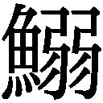

| 詩のこころを読む (岩波ジュニア新書) | |
| 茨木 のり子 | |
| (1979) | |
はじめに
いい詩には、ひとの心を解き放ってくれる力があります。いい詩はまた、生きとし生けるものへの、いとおしみの感情をやさしく誘いだしてもくれます。どこの国でも詩は、その国のことばの花々です。
私は長いあいだ詩を書いてきました。ひとの詩もたくさんよんできました。そんな歳月のなかで、心の底深くに沈み、ふくいくとした香気を保ち、私を幾重にも豊かにしつづけてくれた詩よ、出てこい！ と呪文をかけますと、まっさきに浮かびあがってきたのが、この本でふれた詩たちなのです。いったん扉をひらくと、次から次からあらわれでて困ってしまうほどでしたが、一番最初に姿をあらわしたものが、私にとって一番忘れがたいものでしょうから、いさぎよくそれだけで構成することにしました。
あらためて私の好きな詩を、ためつすがめつ眺めてみよう、なぜ好きか、なぜ良いか、なぜ私のたからものなのか、それをできるかぎり検証してみよう、大事なコレクションのよってきたるところを、情熱こめてるる語ろう、そしてそれが若い人たちにとって、詩の魅力にふれるきっかけにもなってくれれば、という願いで書かれています。戦後の詩に限りましたが、戦前のも三つまじり、外国の詩も二つ入っています。読みやすくするために、原詩にはないふりがなをつけたところもあります。
自然に浮かびあがってきたものを、どう並べようかと思ったら、偶然に「誕生から死」までになってしまったもので、最初からのプランではありません。
どこからでも、きままに読んでください。というと「恋唄」だけでポイされてしまいそうですが。
若いときにはよくわからず、つまらなかったり、へんにひっかかっていたりしたのが、年をへてから、もう一度よみたくなり、手がかりの二、三行や題名などで必死に探す、という経験が私にもあり、ですから或る種の「むずかしさ」ということも恐れませんでした。
詩の引用、絵の転載をこころよく許してくださったかたがた、思いのままに書くことを最初から最後まできわめて尊重してくださった編集部の、岩崎勝海氏、島崎道子さん、ありがとうございました。これらのかたがたのお力添えで、ようやく成りました。
一九七九年九月
木のり子
目 次
かなしみ
谷川俊太郎
あの青い空の波の音が聞えるあたりに
何かとんでもないおとし物を
僕はしてきてしまつたらしい
透明な過去の駅で
遺失物係の前に立つたら
僕は余計に悲しくなつてしまつた
詩集『二十億光年の孤独』
遺失物係の世話になったことのある人は多いはずです。おとし物が戻ってきたときはうれしいけれど、あとかたもなく消えうせてしまったときの侘しさ。おとし物が多いせいか係の人は事務的にさばいて、あまり人間的な言葉を発してくれません。
この詩のなかの遺失物係に人はいたのでしょうか。人気のない駅。どうも無人だったような気がします。しかも、おとし物が何だったかも忘れてしまって、忘れたという感覚だけが残っていて。途方にくれて。すべてが曖昧で、それなのに、へんに澄んだ世界です。
生まれてくるとき、人はどういうところを通ってきたのでしょうか。
「私はどうして今、ここにいるのだろう」
「いったい何をやっているのだろう」
「なんのために生まれてきたのだろう」
思い出せそうで、うまく思い出せない世界。両親がいたから生まれてきたのに間違いはないけれど、もう一つ別の、抽象的なルートに思いを馳せるようになったとき、人は青春の戸口近くに立ったことになるのでしょう。
日本語には〈ものごころつく〉という味わい深い言いかたがありますが、体がつねに細胞分裂をくりかえして大きくなってゆくように、心の世界でも幼年時代の単一さから、分裂の気配をみせはじめます。自分を客観的にとらえようという動きが出てきて、さまざまな欠落感になやまされるようになります。「かなしみ」という詩も、そんな問いの一つかもしれません。
谷川俊太郎には空をあつかったすぐれた詩が多いのですが、青い空には若く多感な人々の心をさそってやまない何かがあるようで、石川啄木にも、
不来方のお城のあとの草に臥て
空に吸はれし
十五のこころ
(『一握の砂』)
という歌がありました。
ほんとうは色なんかついていない茫々とした宇宙の空間、それなのに真青にみえる果てしない空というもの寝ころびながら見ていると、自分は母親のおなかから生まれてきたというより「あの青い空の波の音が聞えるあたり」を通って、やってきたんだ！ この地球の上に。そんな実感が強くきたらしい。
空の青さをみつめていると
私に帰るところがあるような気がする
...
(『六十二のソネット』)
という詩行もあって、この思いは、谷川俊太郎の特徴ある旋律の一つになっています。
本国を離れ、旅さきや他国でくらすとき、そこを客地といいますが、どこかさびしいひびきをもったこの言葉は、ほんとうは自分がいるべき土地ではない、いくら長く住んでも結局は、客でしかないという焦立ちを秘めています。祖国の、田舎の、自分の生家へたち戻れば、のびのびと何のわずらいもないかといえば、そうでもなく、まだどこか帰るべき本当の所があるような気がする。それは多くの人を、しばしばおそう感慨です。小さな子供が自分の家にいるのに「お家へ帰ろう、お家へ帰ろう」と、じだんだふんで泣いたりすることがあって、おとなは笑いますが、幼ければ幼いだけ、郷愁と名づけられるこの思いは鮮烈なのかもしれません。
「かなしみ」は作者が十代の時、書いたものですが、若いときでなければ書けないような、まじりっけなしの純粋さを湛えていて読む人の心を打ちます。
「とんでもないおとし物」とは何だったのかしら？前生というものがあるなら前生の記憶だったかもしれないし、或いは「はィ」と答えて引きうけた、重大任務の何かだったかもしれません。何か大事なものを忘れているという、この「忘れものの感覚」は、詩の大きなテーマの一つですが、日本語でこれほど澄みきったものとして提出された例は、今までになかったような気がします。
芝 生
谷川俊太郎
そして私はいつか
どこかから来て
不意にこの芝生の上に立っていた
なすべきことはすべて
私の細胞が記憶していた
だから私は人間の形をし
幸せについて語りさえしたのだ
詩集『夜中に台所でぼくはきみに話しかけたかった』
「芝生」は作者が四十代になってから書いたものです。谷川俊太郎の第一詩集が『二十億光年の孤独』という題名だったせいもあって、今も「なんだか宇宙人が書いたような詩だ」と批評されたりします。宇宙人が地球へやってきて、人間の形をし、何くわぬ顔で、詩なんか書いてるヤツじゃないか、というわけです。
宇宙人といえば、なにか最新式の現象みたいですが、それなら、かぐや姫だってそうじゃないでしょうか。かぐや姫はなぜ竹の根もとで光り輝いていたのか、そして、どういういわれで天上へまた連れもどされたのか、天上で罪をおかしたその罰に、きたない地上へ降ろされたということが、チラリと出てきますが、『竹取物語』を原文で読んでも、肝心のところがどうもはっきりしません。天の衣を着せられると、地球での暮らしはいっさい忘れてしまって、飛ぶ車に乗って、はるか彼方に消えさります。この、あいまいで美しい『竹取物語』が、日本で一番最初の物語の祖となっているのは何故なのでしょう。いいおとななのに、私はそんなことが面白く、くりかえしくりかえし考えたり、憶ったりしてしまいます。
さて、谷川俊太郎の言によれば、「芝生」は誰かに書かされてしまったように、すらすらできあがってしまったそうで、なんでこんなものを書いたのか？ と後でびっくりしたということです。三十年間、詩を書いてきた実績が「なすべきことはすべて 私の細胞が記憶していた」と言わしめたのかもしれません。
少年時代の「かなしみ」という詩と、四十代になって書いた「芝生」とは、どこかでつながっているようで、そこがなかなか面白くおもわれます。記憶喪失のかなしみの代わりに、手足なんかのほうが具体的に任務遂行の指令を覚えていて活動したということでしょうか。「あなたの細胞が記憶していたのは何だったのですか？」とたずねても、作者にもうまくは答えられないでしょう。でも、谷川俊太郎が書いたたくさんの詩のなかに、その答はちゃんと潜んでいますから、後でふれたいと思います。
生まれたということを、もっと具体的にとらえた詩に、吉野弘の「Iwasborn」があります。
Iwasborn
吉野弘
確か 英語を習い始めて間もない頃だ。
或る夏の宵。父と一緒に寺の境内を歩いてゆくと 青い夕靄の奥から浮き出るように、白い女がこちらへやってくる。物憂げに ゆっくりと。
女は身重らしかった。父に気兼ねをしながらも僕は女の腹から眼を離さなかった。頭を下にした胎児の 柔軟なうごめきを 腹のあたりに連想し それがやがて世に生まれ出ることの不思議に打たれていた。
女はゆき過ぎた。
少年の思いは飛躍しやすい。その時 僕は〈生まれる〉ということが まさしく〈受身〉である訳を ふと諒解した。僕は興奮して父に話しかけた。
やっぱり Iwasbornなんだね
父は怪そうに僕の顔をのぞきこんだ。僕は繰り返した。
Iwasbornさ。受身形だよ。正しく言うと人間は生まれさせられるんだ。自分の意志ではないんだね
その時 どんな驚きで 父は息子の言葉を聞いたか。僕の表情が単に無邪気として父の眼にうつり得たか。それを察するには 僕はまだ余りに幼なかった。僕にとってこの事は文法上の単純な発見に過ぎなかったのだから。
父は無言で暫く歩いた後 思いがけない話をした。
蜉蝣という虫はね。生まれてから二、三日で死ぬんだそうだが それなら一体何の為に世の中へ出てくるのかと そんな事がひどく気になった頃があってね
僕は父を見た。父は続けた。
友人にその話をしたら 或日、これが蜉蝣の雌だといって拡大鏡で見せてくれた。説明によると 口は全く退化して食物を摂るに適しない。胃の腑を開いても 入っているのは空気ばかり。見ると、その通りなんだ。ところが 卵だけは腹の中にぎっしり充満していて ほっそりした胸の方にまで及んでいる。それはまるで 目まぐるしく繰り返される生き死にの悲しみが 咽喉もとまで こみあげているように見えるのだ。つめたい 光りの粒々だったね。私が友人の方を振り向いて〈卵〉というと彼も肯いて答えた。〈せつなげだね〉。そんなことがあってから間もなくのことだったんだよ。お母さんがお前を生み落としてすぐに死なれたのは。
父の話のそれからあとは もう覚えていない。ただひとつ痛みのように切なく僕の脳裡にきついたものがあった。
ほっそりした母の 胸の方まで 息苦しくふさいでいた白い僕の肉体。
詩集『消息』
生まれるのは「受身形」である、という文法上の発見からこの詩は成り立っています。誰でも英語を習うとき、そのように教えられますが、ただ、まんぜんと「受身形か」でやりすごすことに、吉野弘はアッと立ちどまって一の散文詩にしました。もちろん長い時間をかけて。アッと思った詩の種子が開花するまで、十年はたっているでしょう。
今まで誕生をこのようにとらえた日本の詩人はいませんでした。日本以外にもないのかもしれません。この詩は、英訳もされていますが英語圏で暮らす人々にはいっそう新鮮だったかもしれないのです。というのも、自国語には慣れきっていて、文法なんかは日々考えもせずしゃべっているのですから。
日本語でも「何年何月何日に私はこの世に飛び出ました」という人はなく(おどけ以外には)、たいていは「生まれた」といい、日本語の文法を習っているときだったら、作者も躍りあがるような発見の喜びを得られたかどうか。外国語だったればこそです。言われてみれば何の変哲もないことながら、コロンブスの卵であることに変わりなし。
「頼んで生まれてきたんじゃないや」と憎まれ口をたたく子供も多く、それなのに、ああしろ、こうしろとうるさくて、割りの合わない話と、子供時代には誰もが漠然とそのように感じています。受身形で与えられた生を、今度は、はっきり自分の生として引き受け、主体的に把握しなければならないのです。考えてみれば、つじつまの合わない、かなり難解なことを、ひとびとはやってのけているわけなのでした。
そういう認識に美しい形を与え、読む人の頭をすっきり統一してくれます。かげろうの話、母の死が陰影となり、一人の人間の生誕が持つ奥行きの深さ、生誕にまつわる神秘をも開示してくれています。
祭
ジャック・プレヴェール
小笠原豊樹訳
おふくろの水があふれるなかで
ぼくは冬に生れた
一月の或る夜のこと
数カ月前の
春のさなか
ぼくの両親のあいだに
花火があがった
それはいのちの太陽で
ぼくはもう内部にいたのだ
両親はぼくの体に血をそそいだ
それは泉の酒だった
酒蔵の酒ではない
ぼくもいつの日か
両親とおなじく去るだろう。
詩集『見世物』
ジャック・プレヴェールは、フランスの詩人。シャンソン「枯葉」の作詞者でもあり、映画「天井桟敷の人々」「やぶにらみの王様」などの台本も書き、多彩な活動をした人です。
自分の誕生を「父と母との間に、或る日いのちの花火があがって、結果、ぼくが存在しているんだナ、なるほど」このように感じられる明るさ、おおらかさがすてきです。そしてまた、そう思える人は仕合わせな人なのでしょう。祝福もされず両親の顔も知らず、いまわしい結果として生を受ける人も、この世には多いからです。
紀元前の中国の思想家、老子とか荘子という人は「天と地の精気が凝って、露となるように、人の生命もまた、そのようなものである」という考えかたをしていました。これはまた、超大級のおおらかさ。でも、私はこのような思考法が大いに気に入っているのです。父と母、男と女、というのは仮の姿で、大地の精気が或る日或る時、凝縮して、自分というものが結晶化されているのだと思えば、たとえどのような生まれかたをしたとしても、くよくよするには及ばず、百歳まで生きたとしても、大きな目からみれば、単にきらきら光って消える朝露のごときものかもしれません。
伝 説
会田綱雄
湖から
蟹がいあがつてくると
わたくしたちはそれを縄にくくりつけ
山をこえて
市場の
石ころだらけの道に立つ
蟹を食うひともあるのだ
縄につるされ
毛の生えた十本の脚で
空を搔きむしりながら
蟹は銭になり
わたくしたちはひとにぎりの米と塩を買い
山をこえて
湖のほとりにかえる
ここは
草も枯れ
風はつめたく
わたくしたちの小屋は灯をともさぬ
くらやみのなかでわたくしたちは
わたくしたちのちちははの思い出を
くりかえし
くりかえし
わたくしたちのこどもにつたえる
わたくしたちのちちははも
わたくしたちのように
この湖の蟹をとらえ
あの山をこえ
ひとにぎりの米と塩をもちかえり
わたくしたちのために
熱いお粥をたいてくれたのだつた
わたくしたちはやがてまた
わたくしたちのちちははのように
瘦せほそつたちいさなからだを
かるく
かるく
湖にすてにゆくだろう
そしてわたくしたちのぬけがらを
蟹はあとかたもなく食いつくすだろう
むかし
わたくしたちのちちははのぬけがらを
あとかたもなく食いつくしたように
それはわたくしたちのねがいである
こどもたちが寝いると
わたくしたちは小屋をぬけだし
湖に舟をうかべる
湖の上はうすらあかるく
わたくしたちはふるえながら
やさしく
くるしく
むつびあう
詩集『鹹湖』
プレヴェールは西の、会田綱雄は東の詩人ですが、「生誕と死」をとらえる発想があまりにも似ているので、驚いてしまいます。
ぼくもいつの日か
両親とおなじく去るだろう
(プレヴェール)
わたくしたちはやがてまた
わたくしたちのちちははのように
瘦せほそつたちいさなからだを
かるく
かるく
湖にすてにゆくだろう
(会田綱雄)
生誕を単に、すばらしい輝きとして手ばなしで讃えることはできず、その背後にぴったりはりついている死を見逃せないのが詩人の表現なのかもしれません。谷川俊太郎、吉野弘の作品もそうでした。絵を描くとき、影の部分をうまく描けないと、光の部分が生きてこないようなものです。
ここに出てくる蟹は、越前がにや毛がにのように海にすむおいしい蟹ではなくて、淡水産の蟹であるらしい。中国では川にすむ蟹は食べない地方もあるということで、それというのも、昔から戦争があると川に沈んだ死体を、蟹たちがむさぼりくって太るからで、気味わるくて食べられないということです。そんな言いつたえもこの詩の底に沈んでいて「蟹を食うひともあるのだ」という、ふしぎな一行になっているわけです。
米、塩、熱いお粥、蟹、こんな単純なことばだけで、生活や人生を暗示し、終連のセックスの描写も稀にみる美しさです。プレヴェールのそれに勝るとも劣りません。「むつびあう」という、いい日本語があったことも知らされたりして。
生まれるということ、子供を生むということ、死ぬということ、現在でもいろんな飾りをはぎとれば、生の原型はこの「伝説」に集約されてしまいそうです。
この作品は墨絵のように深沈とした格調をもち、「我が愛蔵の一枚の絵」のように、心の底深くに大切にしまっている人が多いのです。
春の問題
征夫
また春になってしまった
これが何回めの春であるのか
ぼくにはわからない
人類出現前の春もまた
春だったのだろうか
原始時代には ひとは
これが春だなんて知らずに
(ただ要するにいまなのだと思って)
そこらにやたらに咲く春の花を
ぼんやり 原始的な眼つきで
眺めていたりしたのだろうか
微風にひらひら舞い落ちるちいさな花
あるいはドサッと頭上に落下する巨大な花
ああこの花々が主食だったらくらしはどんなにらくだろう
どだいおれに恐竜なんかが
殺せるわけがないじゃないか ちきしょう
などと原始語でつぶやき
石斧や 棍棒などにちらと眼をやり
膝をかかえてかんがえこむ
そんな男もいただろうか
でもしかたがないやがんばらなくちゃと
かれがまた洞窟の外の花々に眼をもどすと
おどろくべし！
そのちょっとした瞬間に
日はすでにどっぷりと暮れ
鼻先まで ぶあつい闇と
亡霊のマンモスなどが
鬼気迫るように
迫っていたのだ
や鬚の
原始時代の
原始人よ
不安や
いろんな種類の
おっかなさに
よくぞ耐えてこんにちまで
生きてきたなと誉めてやりたいが
きみは
すなわちぼくで
ぼくはきみなので
自画自賛はつつしみたい
詩集『隅田川まで』
いのちを、自分一人の個としてとらえていません。過去、大過去も圧縮されて、我が身に流入、人類の歴史はすべて我が体内にあり、といった意気軒たる詩のはずなのですが、表現がつつましく、はにかみがちなので、なんともいえない上等のおかしみが漂よいでました。
じっさい手相を眺めたり、指紋に目をこらしたりしていると、私の手でありながら、ほんとうに私の手？ どこからが私の手？ と奇妙な気分になることがあります。この手の中に、からだの中に、父も母も祖母もいるし、見知らぬご先祖様もいるし、切れば出る血に自分のものでありながら完全に自分のものでもないような。漢字をじっと見つめていると、それぞれの線がばらばらに分解して、えたいのしれない気分になるのと似ています。
過去はすっかり消え去ったのではなく、今、生きている者たちの脈搏や息づかい、血の流れにまじって一緒に住み、たち騒いでいるんじゃないでしょうか。
おもしろい詩です。
原始時代のダメ人間を自分と同類にしたために一層したしみぶかく、終わりの四行にいたって、おもわず共感のほほえみ咲きいで、自画自賛はつつしむかわり「まさしく、なんだか、春の問題よ」と、お酒でものみながらこの作者とともに、ヨタりたい気分になります。
みちでバッタリ
岡真史
みちでバッタリ
出会ったヨ
なにげなく
出会ったヨ
そして両方とも
知らんかおで
とおりすぎたヨ
でもぼくにとって
これは世の中が
ひっくりかえる
ことだヨ
あれから
なんべんも
この道を歩いたヨ
でももう一ども
会わなかったよ
詩集『ぼくは12歳』
一九七五年、十二歳で自殺してしまった岡真史の『ぼくは12歳』という詩集のなかの一です。
どうして自分は生まれてきたのだろう？ などと考えて、まごまごしているうち、からだのほうは、どんどん成長して、今度はまた、わけもわからず生むほうの側にまわっているのです。それはアッ！ というまの出来ごとです。
おさない詩ですが、十二歳の少年の心に、もう異性をおもう心が芽生え、このましい少女(たぶん)に出会ってドキンとし、それは自分にとって世の中がひっくりかえるぐらいの大事件に思われます。また会いたいと思うのに「もう一ども 会わなかったよ」と、きびしいリアリズムで終わっているのが哀切です。自分の存在以上に他人の存在が気にかかり、場合によっては他人のために死ぬことさえできる恋の不思議な仕掛けは、十二歳の作者が直観でとらえているように、ほんとに世の中がひっくりかえるぐらいの出来ごとです。金子光晴(一八九五─一九七五年)の詩に、「路傍の愛人」というのがあり、これはおとなの詩ですが、行きずりの恋人という意味で発想はまったく同じなのです。
鳥や蝶なら、すぐにも行動を開始できるでしょうが、人間はなんて厄介なんでしょう。岡真史の詩には、「ぼくは一九歳」とか「かたおもい」などの言葉がちらばっていて、ずいぶん背伸びをしている感じですが、すみずみまで読んでも、おさない心にどのようなドラマを抱えていたのか、自殺の動機はわからないままです。
けれど、「みちでバッタリ」という詩で、この未知の少年の魂に、それこそバッタリ出会えたような気がするのです。五年、十年、つきあったってうまくはとらえられない人の心ですが、良い詩は瞬時に一人の人間の魂を、稲妻のように見せてくれることがあるのです。大昔の人でも、身近な知人の誰かれよりも親しく感じられたりすることがあるのも、詩の一つの力なのでしょう。
十二歳くらいの少年と話すとき、しばしばこの詩が私の脳裡をよぎってゆきます。
十一月
安西均
鐘が鳴りやむ 鐘が
ひとしきりそよいでゐた木洩れ日のやうに
雲が滑つてゆく しぐれの雲が
大きな黒板拭きのやうに一日を消しながら
天の小学校もやつと放課後どきといふのに
何かの償ひに居残された少女が一人
少女は何度もエレミヤ哀歌を暗誦してゐる
しかも第一章第一節から なんと大変なことだらう
(哀しいかな昔は人の満みちたりしこの都邑いまは寡婦のごとくなれり)
ヤモメとは鳥の名前か知ら
鳥ならばぼくなんかよりふしあはせな鳥に違ひない
ぼくは少女がゆるされて帰つてくるのを待つてゐる
淡いしぐれに濡れながら 残り少い一日をいつまでも。
詩集『花の店』
作者はクリスチャンなので、罰を受けた少女が暗誦させられているのは「エレミヤ哀歌」です。
ヤモメとは未亡人のことと知りながら、カモメからの連想なのか「鳥の名前か知ら 鳥ならばぼくなんかよりふしあはせな鳥に違ひない」と、とぼけていて、それがなかなかいい効果をあげています。
駅の伝言板などには、待たされて、じれて怒った言葉がなぐり書きされていますが、この詩はまったく反対に、ゆったりしていて、待たされることさえ楽しんでいる風情があって、「残り少い一日をいつまでも」は、もしかしたら一年かもしれないし、或いは一生のことかもしれないと思わせるものがあります。よく考えると、現実に小学生とデイトするのも、ちょっとへんな話で、晩秋、天の一角からなにかしら非常に澄んだ啓示のようなものを受けとり、それが少女という形をとったにすぎず、本当はもっと深い宗教的な祈りや憧憬をあらわしているのかもしれません。
「エレミヤ哀歌」は、エレミヤという預言者が、エルサレム陥落後の荒廃をなげいた「かなしみうた」で、旧約聖書に入っています。
安西均が「十一月」を書いたのは、敗戦後まもなくで、戦時中は若いクリスチャンとして、夫妻ともども警察のきつい取調べを受けたりした人ですから、目前にひろがる悲惨な敗戦光景に旧約時代のイスラエル民族の敗亡がだぶったとしてもふしぎはありません。
ぼくは少女がゆるされて帰つてくるのを待つてゐる
これは逆に、絶対にゆるされないもの、解き放ってもらえないものを暗示しているようで、キリスト教でいう原罪を、かぼそく無垢な少女に託してもいるようです。人が人を裁く戦犯などと次元を異にするもの。そういうものがこの詩の底に沈められていますが、いずれにしても、声の澄んだ清楚な少女をいつまでも待っているのは長身の美青年らしく思われ、深遠なことを転じて、匂いやかな恋唄めかして書いたところは、にくらしいくらいうまいのです。
本能にうながされてする一過性の恋は、ほぼ誰にでもできるでしょう。けれど愛はもっと意志的で持続的なもののように思います。しかも、おおかたの凡人には、まっすぐ愛におもむくことはむずかしすぎて、恋を通過することによって何とか愛にまで至るというケースが多いようです。「恋」と「愛」という言葉は混同されて同義語のように使われていますが、詩人たちはそれをかなり注意深くとりあつかっています。好きな詩をとりだしてみて、今度はじめて気づいたことでした。
「十一月」の全体の甘美さは恋に近く、待つ態度の意志的なところは愛に近く、いわば二つにかかっていて、宙づりのところが、この詩の魅力の源泉かもしれません。
それは
黒田三郎
それは
信仰深いあなたのお父様を
絶望の谷につき落した
それは
あなたを自慢の種にしていた友達を
こっけいな怒りの虫にしてしまった
それは
あなたの隣人達の退屈なおしゃべりに
新しいわらいの渦をまきおこした
それは
善行と無智を積んだひとびとに
しかめっ面の競演をさせた
何というざわめきが
あなたをつつんでしまったろう
とある夕
木立をぬける風のように
何があなたを
僕の腕のなかにつれて来たのか
詩集『ひとりの女に』
恋はしばしば他人からみると滑稽で、あほらしく、一種の病気みたいに見え、ひとびとの格好の話題になりますし、恋人どうしもまた、そんな世間に対しておそろしく排他的になります。
『ひとりの女に』は戦後出版された、もっともすぐれた恋愛詩集として、評価の高いものですが、今読んでも、少しの古びも感じさせず爽快で、これが敗戦後の、人みな飢死すれすれで、難民のおんぼろ時代に書かれたとは信じられないくらいです。復員兵として南方から帰り、ひどく荒んだ日々を送っていた作者が、一つの恋を得て、生きる力をふたたび取り戻してゆく過程がみずみずしく描かれた連作で、しかもその少女は、
馬鹿さ加減が
ちょうど僕と同じ位で
貧乏でお天気屋で
強情で
胸のボタンにはヤコブセンのバラ
ふたつの眼には不信心な悲しみ
ブドウの種を吐き出すように
毒舌を吐き散らす
唇の両側に深いえくぼ
(「け」)
というぐあいで、特別に美化されていないところが新鮮です。
幻想ではなく、ありのままの自分を愛されるのは心安らかで、誰しもの願いでしょうが、親以外にはなかなかこうはいきません。一人の少女によって救いあげられながら、同時に、父が娘をみているようなまなざしもあり、男性のそうした二面性を、期せずしてあらわしています。
ヤコブセンはデンマークの作家で「ここならばバラ咲かむ」という小説があり、当時の作者の愛読書だったのかもしれません。
僕はまるでちがって
黒田三郎
僕はまるでちがってしまったのだ
なるほど僕は昨日と同じネクタイをして
昨日と同じように貧乏で
昨日と同じように何にも取柄がない
それでも僕はまるでちがってしまったのだ
なるほど僕は昨日と同じ服を着て
昨日と同じように飲んだくれで
昨日と同じように不器用にこの世に生きている
それでも僕はまるでちがってしまったのだ
ああ
薄笑いやニヤニヤ笑い
口をゆがめた笑いや馬鹿笑いのなかで
僕はじっと眼をつぶる
すると
僕のなかを明日の方へとぶ
白い美しい蝶がいるのだ
自分の気持ちが、好きな人にすっと伝わったとき、受け入れられたとき、あるいはまた、好きだった人が同じくらいに自分に好意を持っていてくれたのを知ったとき、告げられたとき、そんな時は、見なれた風景や周囲のありさまが、がらり一変して、別の色彩を帯びて輝くということがあるのでした。「まるでちがって」しまうのです。恋多き人というのは、こんな奇跡を何度でも味わいたい人なのかもしれません。
白い蝶は、僕にも生きられるという希望そのものの形象化で、ジグザグに、ひらひらと飛ぶ蝶の動きが見えるようです。
この詩を読むと、自分たちだけのかくしごとが、普遍的な深さにまで達し、他の恋人たちにも思いあたるふしあり、なのです。自分の思いを深く掘り下げてゆくと、井戸を掘るように掘り下げてゆくと、地下を流れる共通の水脈にぶちあたるように、全体に通じる普遍性に達します。それができたとき、はじめて表現の名に値するといえましょう。
恋愛詩は現在もたくさん書かれているわけですが、『ひとりの女に』が出てから二十五年もたつのに、一冊の詩集として、まだこれを超えたものは出ていません。短歌ではなく、口語体の自由詩で、恋唄を書くのがいかにむずかしいか、ということです。
ところで、黒田三郎夫人となったこの少女は、自分一人に捧げてくれたのならいいけれど、公表してしまったと言って、プンプン怒ったそうですが、その気持ちもわからなくはないけれど、読者としては詩集として刊行され、日本語全体の富となったことを喜びます。
この詩集には貧乏という言葉がだいぶ出てきますし、事実、詩を書いている人は現在もさほど事情は変わっていません。というのも、詩ほど値のつけにくいものはなく、ゼロとも言えるし、一一億円とも言えるもので、現実に世間がつけてくれる値段は一万円くらい。
私はときどき一人で値段ごっこというのをやって、この世の流通機構をひっくりかえしてしまいます。ありふれたものは値が安いというのは経済の原則でしょうが、たとえば、レモン一個が五十円で買えるなんて信じられません。レモンの形、色、ヴィタミンＣ含有度、すべてひっくるめて、あの一顆は私のなかで五千円くらい。高村光太郎や梶井基次郎がその作品のなかでレモンに与えた価値は宝石なみで、当時は手に入れにくかったにせよ、正確な感覚に思えます。
逆にダイヤモンドやミンクの毛皮は、身につけたいと思わないから、もらったとしても、がらくたなみ。一般には人間も、学歴や社会的地位で価値が決まるようですが、私のランク表によれば、役たたずのダメ人間とされている人が、すこぶる高みの椅子に坐っていたりします。
とっくに死んだ詩人たちたとえば芭蕉がやった仕事などは、現代の私たちの感受性にも大きな影響を与え、よくもわるくも民族の感覚を決定づけるくらいの大きなことをやっているわけで、芭蕉の一句さえ読んだことのない人にも、はかりしれないものを与えつづけています。新聞の見出し、天気予報、日常会話にも、それらはさりげなく、しのびこんでいるのですから。
というわけで、黒田三郎の詩ばかりでなくこの本で私が選んだ詩はすべて、一五億円くらいの値打ちありと思っているのです。けっして誇大妄想狂ではありません。もっとも、こう言いはるのが怪しいという説もありますが。
君はかわいいと
安水稔和
君はかわいいと
どうしていっていけないわけがあろう。
ただ言葉は変にいこじで妬み深く
君とぼくとのなかを
心よからずおもいがちで
君とぼくとのあいだを
ゆききしたがらない。
だから君
ちょっと耳を。
どうだろう
言葉にいっぱい
くわせてやっては。
かわいいという言葉を
君のかわいい口にほおりこみ
君のかわいい唇のうえから
しっかりと封印しよう
ぼくの唇で。
奴めきっと憤然と
君の口のなかで悶死するにちがいない。
言葉の死んだあとに
愛が残るとすれば。
だから君
どうだろう
詩集『愛について』
ひとを好きになったとき、言葉がいかに頼りないか、何一つ言えなかったり、思っていることとまるっきりちがうことを口走ったり、誤解されたり、むしろ、じれったく邪魔っけなものに感じられたりします。
どうだろう
言葉にいっぱい
くわせてやっては。
言葉に対する猛烈な不信、それすらも言葉であらわすしかないとは。「かわいい」とだけ言って、あとはキスでしっかり封印してしまおうというわけです。言葉のヤツはくるしがって君のからだ中をかけめぐり憤然と死んじまうにちがいない、というイメージは、言葉を封じこめると同時に、はげしいキスで有無をいわさず、ふらふらにさせてやるという気負いがあって、若々しく清潔なエロティシズムにれています。「だから君 どうだろう」などと同意を求めるふりをしながら、実際はこの通り、果敢にやってしまったにちがいないと思うのです。
なぜなら、安水稔和は以後、男女間のことをほとんどテーマにしていないので、この恋は成就したらしく思われること。この詩は、詩集『愛について』に入っていますが、以後は旅につぐ旅に出て、やがて作品は旅の詩で満たされてゆくようになるからです。それも芭蕉、菅江真澄、柳田国男、折口信夫などにつながる、日本の深部にじかに触れたい、なまでぶつかりたいという素手の旅で、英語の先生をしながらひまひまに、能登、佐渡、奥三河、対馬、東北などを情熱的にあるきまわる行動性は、さきの推測を裏づけてくれます。
鳩
高橋睦郎
その鳩をくれないか と あのひとが言った
あげてもいいわ と あたしが答えた
おお なんてかあいいんだ と あのひとがだきとった
くるくるってなくわ と あたしが言いそえた
この目がいいね と あのひとがふれた
くちばしだって と あたしがさわった
だけど と あのひとがあたしを見た
だけど何なの と あたしが見かえした
あんたのほうが と あのひとが言った
いけないわ と あたしがうつむいた
あんたが好きだ と あのひとが鳩をはなした
逃げたわ と あたしがつぶやいた
あのひとのうでの中で
詩集『ミノ・あたしの雄牛』
作者が二十代で若かったとき、そして読者の私もまだずっと若かったとき読んで、好きになった詩ですが、いま読んでも少しも照れくさくありません。照れくさかったり、むずがゆくなるのはダメな詩で、特に恋唄のばあい、それがはっきり出ます。
女の子の立場で書かれていますが、「鳩」は一種の小道具で、二人で鳩をいじっているうちに、話は気持よくリズミカルに進んで、気がつけば鳩は自由の彼方へそして二人の心が無理なく寄りそう過程がいきいきと描かれて、このほほえましい小さな恋人たちを祝福したくなります。
ちょっと気になるのは、男の子の発する「あんた」という言いかたです。「あなた」ではこの場合、そらぞらしいかもしれないし、「おまえ」ではすでに我がものとなったようだし、「君」だったら一番ぴったりだったのではないでしょうか。ふだんの会話で、男の子が「君」といえば爽やかに聞こえるのに、女の子が「君！」と呼びかけるのを聞くと、ちょっと耳がざらつく感じがあります。
それなのに短歌などで「君」と文語的に使えば、ひどく床しい気配が立ちこめて、まるっきり変わってしまいます。
日本語の二人称はややこしくて、Ｙｏｕ一つで済ますわけにはいきません。話しことばでも、書きことばでも選択しなければならず、黒田三郎は「あなた」、安水稔和は「君」を選んでいました。
「あんた」はちょっと見下げたようなニュアンスを感じるのですが、地方によっては「あなた」と言っているつもりで「あんた」になっている所もあり、これはこれでいいのかもしれません。もう一つ、「あんた」の出てくる詩。
葉月
阪田寛夫
こんやは二時間も待ったに
なんで来てくれなんだのか
おれはほんまにつらい
あんまりつらいから
関西線にとびこんで死にたいわ
そやけどあんたをうらみはせんで
あんたはやさしいて
ええひとやから
ころしたりせえへん
死ぬのんはわしの方や
あんたは心がまっすぐして
おれは大まがり
さりながら
わいのむねに穴あいて
風がすかすか抜けよんねん
つべとうて
くるしいて
まるでろうやにほりこまれて
電気ぱちんと消されたみたいや
ほんまに切ない お月さん
お月さん やて
あほうなこと云いました
さいなら わしゃもうあかへん
死なんでおれへん
電車がええのや
ガーッときたら
ギョキッと首がこんころぶわ
そやけど
むかしから
女に二時間待たされたからて
死んだ男がおるやろか
それを思うとはずかしい
詩集『わたしの動物園』
これもいっぷう変わった恋唄の一つ。
葉月は、八月の古い呼び名です。一人の男の恋ゆえの、大まじめなのに大抜けという、ピエロめいた悲哀をそくそくと伝えてくれます。大阪弁を駆使しているせいで、いっそうあっけらかんとした、おかしさと哀しさがれて。
二時間はただの二時間なのか、それとも遠からず恋人にふられるかもしれないという、予感をはらんだ二時間だったのでしょうか。この詩の持っているユーモアとペーソスは、冷静に客観的に自分を見ることができているところから発しているので、最後のところで、関西線飛びこみの件は、ふみとどまれたことでしょう。
「サッちゃん」という、かわいい童謡がありますが、阪田寛夫はその作詞者でもあり、
こんなに さむい
おてんき つくって
かみさまって
やなひとね
(「カミサマ」)
こんな愉快な歌もあり、たいていは作曲されて、うたわれています。
練習問題
阪田寛夫
「ぼく」は主語です
「つよい」は述語です
ぼくは つよい
ぼくは すばらしい
そうじゃないからつらい
「ぼく」は主語です
「好き」は述語です
「だれそれ」は補語です
ぼくは だれそれが 好き
ぼくは だれそれを 好き
どの言い方でもかまいません
でもそのひとの名は
言えない
詩集『サッちゃん』
方言を生かして良い詩を書ける人はまた、標準語で書いても、しゃれた詩を書ける人であることがわかります。
「練習問題」は、まるで中学生の心を代弁しているようにもみえ、おとなになっても、実にするりと無理なく、子供時代、中学生時代の心にそのまま立ち戻れる人もいるのだな、と感嘆させられます。電車のなかで、中学生の一団に会ったりすると、誰も彼も「そのひとの名は 言えない」と、がんばっているかのように見えてしまいます。
顔
松下育男
こいびとの顔を見た
ひふがあって
裂けたり
でっぱったりで
にんげんとしては美しいが
いきものとしてはきもちわるい
こいびとの顔を見た
これと
結婚する
帰り
すれ違う人たちの顔を
つぎつぎ見た
どれもひふがあって
みんなきちんと裂けたり
でっぱったりで
これらと
世の中 やってゆく
帰って
泣いた
詩集『肴』
松下育男は、まだ二十代の若い詩人ですが、一九八〇年代の恋唄は、こういうふうなものかしら、と思わせてくれます。どこか醒めていて、やさしく、そして苦い。
にんげんとしては美しいが
いきものとしてはきもちわるい
ひどくおかしく、適切でもあり、有史以来、恋人をたたえる数えきれない表現に、また一つ何かを加えた新しさがあります。
もし人間を裸にして、動物園の檻に入れ、ほかの動物たちが眺めるとしたら、ペロンとしたうすきみわるい珍獣のはずです。自分もそんな人類に属し、恋人の顔をみても、美と醜、ともにみる複眼をまぬがれず、「帰って 泣いた」も、めめしくはありません。むしろ、人間存在の寂寥感、ブラック・ユーモアのようなものさえ伝わってきます。
こういう「泣き」は女性にはなく、男性特有のものでしょう。
女のひとの詩も少し見ましょう。
日本の女歌は『万葉集』以来、すべて恋歌といってもいいくらい、連綿とつづいてきました。それらは、日本語の歴史に艶を与え、意味に意味をだぶらせて、あえかに美しく、遠まわしに憶いを伝える洗練された伝統を育てました。そういう良さ、ありがたさがある反面、強い男性にからまりつく蔦のように、あまりにも、なよなよ嫋々として、いささか情ないという一面も持っています。
その反動だったかもしれませんが、戦後、恋唄は女のひとによって、あまり書かれていません。恋のみが人生にあらず、今まで押えつけられてきたものを撥ねのけ、ともかく自分の言葉を！ それを探りだすことの方に力点がかかってきたのかもしれません。また、かつての古典に息づく恋歌が、なにはともあれ、秀れていたために、その完成度にばかり目がいって、現在の自由詩型で書かれるものが、衰弱、情感不足、がさつ、読むに耐えずと思っている人も多いようです。
でも私はそうは思っていません。数はすくないけれど、現代の女性詩人たちによって書かれているものの中に、平安朝時代のものより、はるかに光ったものを発見できるからです。いにしえの恋歌は「わたしをもうお見限りなのね、あんまりですわ」というのが圧倒的に多いのですが、私が選んだ現代のものは、あくまでも男性と対等で、しっかり自分をもっている手ごたえが感じられ、やはり質の変化は見てとれます。
海鳴り
高良留美子
ふたつの乳房に
静かに漲ってくるものがあるとき
わたしは遠くに
かすかな海鳴りの音を聴く。
月の力に引き寄せられて
地球の裏側から満ちてくる海
その繰り返す波に
わたしの砂地は洗われつづける。
そうやって いつまでも
わたしは待つ
夫や子どもたちが駈けてきて
世界の夢の渚で遊ぶのを。
詩集『見えない地面の上で』
月の満ち欠けの周期に関係ありと言われてきた女の生理現象を、第一連第二連で触れています。男よりも、より自然に近い女のからだのリズム、そのようなリズムをくりかえしながら、心はどうあれ、からだは月々確実に待っているのです。第三連では、まるで古代の母系制社会のように、主体性は女の側にあり、堂々と健やかで、「遊ぶ」という言葉が、まるで新品のように洗い出され、輝いています。いつかやってくるだろう夫と子供たち、ととれば未来のことになりますし、すでにいる夫や子供たちと思ってもかまわないでしょう。
女の生理現象、結合、生殖も、卑猥に語ろうとすればどこまでも卑猥にすることができるし、この詩のように、どこまでも涼しく高い次元であらわすこともできる変幻きわまりなさです。
夫や子どもたちが駈けてきて
世界の夢の渚で遊ぶのを
このイメージは朝もやのように煙って夢幻的な美しさ、第一連、第二連の小さな子宮を越えて、茫々としたひろがりをもっています。
女にとっては嫌悪でしかない月の満ち欠けに、作者は清々しい夢を託していて、このように感じている女性が一人いるとわかったことで、私たちの感じかたは変貌をよぎなくされ、一つの深い経験が加わったことになるのでした。そしてまた、女がみずからを卑しめるときは生むという行為も、どこまでも堕落し崩れさってゆくだろうという、語られていない言葉が、この詩の背後から聞えてくるようです。
木
高良留美子
一本の木のなかに
まだない一本の木があって
その梢がいま
風にふるえている。
一枚の青空のなかに
まだない一枚の青空があって
その地平をいま
一羽の鳥が突っ切っていく。
一つの肉体のなかに
まだない一つの肉体があって
その宮がいま
新しい血を溜めている。
一つの街のなかに
まだない一つの街があって
その広場がいま
わたしの行く手で揺れている。
詩集『見えない地面の上で』
「木」は、異性への恋唄ではなく、「未来への恋唄」です。未来は、遠くのかなたに気楼のようにゆらゆらと、突拍子もなくあらわれるものではなく、現在の現実のなかに、すでに胚胎しているもの、というのがこの詩の主題です。
一本の木は、たくさんの実をかかえ、実はやがてはじけ、種となって飛びちり、あるいは小鳥によって運ばれて、遠いかなたに根を下ろし、亭々とした大木になる。一本の木が蔵している小さな無数の種子、それらが隠しもっている活力。ぎっしりつまった未来が、一本の木にさえ重なり錯綜し、ゆれているのが透視される。
第一連の主題が、つぎつぎ、別の物に姿をかえて、第四連まで重層的に展開されてゆく、知的な詩です。けれど、つめたさや皮肉さはまったくなく、むしろ楽しげに、こちらを刺激し挑発してくるものがあって、とくに第四連がおもしろく想像力をかきたてられます。
東京を例にとるなら、もう、にっちもさっちもゆかない街、人間が尊重されていない街、いろんな不備をあらためるには、もとの武蔵野にもう一度戻さなければどうにもならないみたいな。関東大震災、戦災をくぐりぬけながら、ヴィジョン不足で、画然と新しい街をつくれなかった不手際。次のチャンスこそ、と願うそれが、大地震や大災害を想定しなければならないのは情ないけれど、今もっている欠陥を粘りづよく見据えてゆく目をもっていなければ、またぞろ同じことのくりかえしで、新しい礎石を置くことはできません。
高良留美子は、市民が集って意志表示できるような、大きな広場さえもっていないのが日本の都市の欠陥と感じていて、自然発生的なごちゃごちゃした街角に立って、そういう広場をもつ街を幻視しています。「かれらの行く手」とは、孫の世代かもしれないし、孫の孫くらいか、もっと遠いかもしれません。
「未来への恋唄」が、女のひとによって、こんなにのびやかに、透きとおるような美しさで描かれたこと、読むたびにうれしさがひろがってゆきます。
男について
滝口雅子
男は知つている
しやつきりのびた女の
二本の脚の間で
一つの花が
はる
なつ
あき
ふゆ
それぞれの咲きようをするのを
男は透視者のように
それをズバリと云う
女の脳天まで赤らむような
つよい声で
男はねがつている
好きな女が早く死んでくれろ と
女が自分のものだと
なつとくしたいために
空の美しい冬の日に
うしろからやつてきて
こう云う
早く死ねよ
棺をかついでやるからな
男は急いでいる
青いあんずはあかくしよう
バラの蕾はおしひらこう
自分の掌がふれると
女が熟しておちてくる と
神エホバのように信じて
男の掌は
いつも脂でしめつている
詩集『鋼鉄の足』
最初よんだとき、外国のいい詩を、名訳で読んだような感銘を受けました。これが現代の日本の女性詩人によって書かれたことに、ちょっとびっくりしてしまいます。
第一連は、女のからだの成熟度について、知ったふうなことを言う男たち。第二連は、自分の好きな女を、若く美しいままで凍結してしまいたい、老いたり世帯じみたりの変貌をきらう男の願望、ロマンティシズムが描かれ、「早く死ねよ 棺をかついでやるからな」は、実際に聞いたせりふではなくて、彼らの心の奥底にひそむ声をつかみとっているようであり、おそろしく利いている一行です。第三連では、青年、壮年、老年を問わず、若い娘を見ると、なんともかとも落ちつかなげな、男性のうぬぼれ心を活写しています。
男性への憎悪をテーマにした詩ととらえる人も多いのですが、私は愛憎こもごもの男性への恋唄と、とっています。こうでなければ男といえない面もあるからで、かなり年上の女が、かなりのゆとりをもって、男のうとましさ、いとおしさを、突きはなして思いやっているような、複雅な味わいをもち、まごうかたなき詩であって、上等のワインのようなコクがあります。とびきりの日本語で書かれていますから、十勝ワインの逸品というところでしょうか。
鋭い切れ味、透明度、この静かな女のまなざしは、ぞっとするほど魅惑的です。一瞬、外国の詩のように思ったのも、ここに描かれた男たちの特徴が、世界に共通の雄の性であるためでしょう。うぬぼれ心、横で、手が神エホバのようにしめっているせいで、人類はここまで存続してきたわけなのですが、それにしても、あまりにも、はびこりすぎたのでは。
秋の接吻
滝口雅子
ひとを愛して
愛したことは忘れてしまった
そんな瞳が咲いていた
萩の花の白くこぼれる道
火山灰の白く降る山の道
すすきを分けてきた風が
頰をさし出して
接吻した
ひとを愛して
愛したことは忘れてしまった
詩集『窓ひらく』
同じ作者による小品。ここに描かれているのは恋の果て、の感慨です。はじめて読んだときショックを受けて、ぼんやりと自分の思いに沈んでしまった日のことが、まざまざとよみがえってきますが、それはもう十五年も前のことになります。
目というのは小さな容積ながら、実に無限のものを湛えています。でも皆、自分のことにかまけて他人の目に湛えられているものに注意を向けたりはしません。どこかの高原にひっそりと立つ女のひとの瞳のなかに、人を愛して、燃焼しつくして、そして死別、生別、裏切りによってかともかくその愛から遠くきてしまって、もうすべてを忘れ去ってしまったかのような、一見、ほほけたような瞳を作者は発見します。鋭く、やさしい、発見です。
その女のひとをいたわるように、そっと接吻してゆくのは秋風ばかり。ずいぶんさびしいけれど、典雅な風景です。
滝口雅子がこの詩を書いたのも、作者自身が、「ひとを愛して 愛したことは忘れてしまった」そんな瞳をもつ人だったからではないか、ほぼ確信されるところです。
愛されるという受身形しか知らない人は哀しい。涙と傷、捨て身で人を愛した経験をもった人の瞳は、歳月のなかで茫々とかすみながらも、なんらかの痕跡を宿しているものかもしれません。人を愛することを知らずに来た人の瞳とくらべたら歴然かもしれないのです。
この詩を読んでショックを受けたのは、ああ、そういえば、あの人の瞳も、この人の瞳もまるでつぎつぎ灯がともるように、知人のだれかれの瞳が浮かんできたからでした。
瞳ひとの湖。
君看ずや双眼の色
語らざれば愁いなきに似たり
という漢詩の片言も思い出されます。
はなしをしなければ、何の愁いもないように見えるけれど、ごらんなさい、かの人の二つの目に湛えられているものを、その深さを。
ふゆのさくら
新川和江
おとことおんなが
われなべにとじぶたしきにむすばれて
つぎのひからはやぬかみそくさく
なっていくのはいやなのです
あなたがしゅろうのかねであるなら
わたくしはそのひびきでありたい
あなたがうたのひとふしであるなら
わたくしはそのついくでありたい
あなたがいっこのれもんであるなら
わたくしはかがみのなかのれもん
そのようにあなたとしずかにむかいあいたい
たましいのせかいでは
わたくしもあなたもえいえんのわらべで
そうしたおままごともゆるされてあるでしょう
しめったふとんのにおいのする
まぶたのようにおもたくひさしのたれさがる
ひとつやねのしたにすめないからといって
なにをかなしむひつようがありましょう
ごらんなさいだいりびなのように
わたくしたちがならんですわったござのうえ
そこだけあかるくくれなずんで
たえまなくさくらのはなびらがちりかかる
詩集『比喩でなく』
ひらがなだけで書かれていますから、絵本でも読むように、一字ずつ、たどたどしく文字を拾ってゆかねばなりません。なんだろうな？ と一瞬おもうのはしゅろう＝鐘楼、ついく＝対句ぐらいです。たわむれに、ひらがなの部分にそれぞれ漢字をあてはめて書いてみたことがあるのですが、この詩はやっぱりひらがなだけのほうが良くて、作者の意図が了解できました。
冬に桜は咲きませんから、この題名は「季節はずれの恋」ということになるでしょうか。若い時は一緒に暮らせないなら死ぬ！ というような一途な思いつめかたをするものですが、中年の恋であるこの詩では、
ひとつやねのしたにすめないからといって
なにをかなしむひつようがありましょう
といっています。故あって一緒に住めないのか、ともに住むことを拒否したのでしょうか。
公認された間柄ではないらしく、三角関係か四角関係かもしれないのですが、この世の掟や民法なんかなんのその、もっとも深く理解しあえる相手として、その存在を意識しあい、相手にふさわしいものに成りたいという願いを日々抱いている、いわば、現世の枠からは浮上した形の恋です。
「たえまなくさくらのはなびらがちりかかる」のも幻想のさくらふぶきで、もしかしたら雪だったのかもしれません。
ひらがなばかりで書かれているために、昔ながらの日本の女の訴えかける、めんめん調のようにとられかねませんが、内容はむしろ理智的で、スキッとしています。こういう境地に達するには、たくさんの苦しみをへたのかもしれず、それは底に沈めたまま、冴えわたっています。こういう恋のありかたが、これからは増えてゆくのかもしれず、わらべうた風ですが、意外に時代を先取りしているのかもしれません。
私が毎日じたばた暮らしているせいか、生きるというのは、なんてこう、じたばたしなくちゃならないのかと思います。喜怒哀楽のさざなみ、大波にゆすぶられて、ひとびともまた、そのようです。生きることに深く根ざしている詩も、とどのつまり、この章の中にすべて入ってしまうでしょう。
詩は感情の領分に属していて、感情の奥底から発したものでなければ他人の心に達することはできません。どんなに上手にソツなく作られていても「死んでいる詩」というのがあって、無残な屍をさらすのは、感情の耕しかたがたりず、生きた花を咲かせられなかったためでしょう。
感情は軽視されがちで「感情的な人」と言われればけなされたようでおもしろくなく、「理性的な人」と言われればほめられたと思ってしまうのも、理智のほうが上等という意識があるためです。けれど高度の数学や物理の発見は、しばしば直観によるといわれ、実証もされています。もっともボヤッとしていて、突如、霊感によってひらめいたというのではなく、理づめで追っていって迷路をぐるぐるるような苦しみの果て、或る日或る時、直観によって飛躍できたということでしょう。科学的なことはてんで駄目ですが、しかしこういう瞬間のことは十分想像でき、そうだろうなと思います。
感性といい、理性といっても、右折左折の交通標識のように、はっきり二分されるものではないようです。私の好きな詩は、私の感情と理智を同時に満足させてくれるからです。
くるあさごとに
岸田衿子
くるあさごとに
くるくるしごと
くるまはぐるま
くるわばくるえ
詩集『あかるい日の歌』
ときどきとなえたくなる呪文の一つ。
大人も子供も、毎日毎日、時計のぜんまいを巻くように、ぎりぎり予定を巻きあげて日程を消化するのにせいいっぱい。なぜ、こんなに忙しい思いをしなくちゃならないのか、これが生きることのすべてなのかしら？
ときどき頭が痛くなったりするのも、弱い頭をそんなに酷使してもらっちゃ困るという、頭脳のストライキです。下痢するのは胃腸の、風邪ひくのはからだぜんたいのストライキ。からだに関しては一人ひとりがそれぞれの経営者であり、労働者でもあって、歯車の一つが「もう厭！」と言えばちぐはぐになって、全体がダウンです。休めということで、その言いぶんを聞いてやらなくてはなりません。
くるまはぐるま
くるわばくるえ
時にはそんなふうに自分に言いきかせ、解き放ってやることも必要でしょう。
言いきかせるまでもなく、この作者は「くるわばくるえ」を地でいっていて、まったく自由に生きています。約束の時間、つまり人間のとりきめた時刻にあんまり従いませんし、待ちぼうけをくわされることもしばしば。たまにきっかり会えると異変が起こるのではと思えるほどです。一緒に旅をしてもゆったりしていて、指定券を買った列車に乗れそうになく、きちょうめんな私は心の中で「スケジュール、狂わば狂え」と叫び、野宿するつもりならあわてることはないのだと言いきかせていると、あわや、というところで乗れたりするのでした。
社会生活をするには、さまざまな約束を守ったほうが人に迷惑をかけず、すべてなめらかにゆくわけですが、ただそれだけのことにすぎません。そしてこれができないと落伍者にされがちなので、みんななんとなくがんばるわけです。同じ空気を吸いながら、まったく自分一人のペースで生き、人に何とおもわれようとかまわず、自分の歌しかうたわない岸田衿子の存在と詩は、思いがけない方角に、ぽっかり風穴あけるような、作用をはたしてくれています。
行のはじめはぜんぶ〈くる〉ではじまっていて、〈くる〉をくるくるまわしていたら詩ができてしまったらしく、ことばあそびからもいい詩が生まれる例の一つです。昔のわらべうたや民謡がしばしばそうであったように。
見えない季節
牟礼慶子
できるなら
日々のくらさを 土の中のくらさに
似せてはいけないでしょうか
地上は今
ひどく形而上学的な季節
花も紅葉もぬぎすてた
風景の枯淡をよしとする思想もありますが
ともあれ くらい土の中では
やがて来る華麗な祝祭のために
数かぎりないものたちが生きているのです
その上人間の知恵は
触れればくずれるチューリップの青い芽を
まだ見えないうちにさえ
春だとも未来だともよぶことができるのです
詩集『魂の領分』
青春は美しいというのは、そこを通りすぎて、ふりかえったときに言えることで、青春のさなかは大変苦しく暗いものだとおもいます。大海でたった一人もがいているような。さまざまな可能性がひしめきあって、どれが本当の自分なのかわからないし、海のものとも山のものともわからないし、からだのほうは盲目的に発達してゆくし、心のほうはそれに追いつけず我ながら幼稚っぽいしで。ありあまる活力と意気消沈とがせめぎあって、生涯で一番ドラマチックな季節です。
自分をつかむという、難事業中の難事業のとっぱなですから途方にくれるのも無理からぬこと。どんな時代にも、青春期にハンドルを切りそこなう人が多いのは、たしかに危険なカーブ、なかなかの難所であることがわかります。
見ていると、十代の後半までに、はっきり自分をつかむことのできる人がいます。つまり自分の時間を何に一生捧げて悔いないか、自分の素質を早い時期に見定めることのできた人で、聡明という言葉はこういう場合にこそぴったりだと思えるくらい。でもたいていは、長い模索とあちらにぶつかりこちらにぶつかりしながら自分をつかみとってゆくのがふつうで、それはこの詩に書かれているように、
できるなら
日々のくらさを 土の中のくらさに
似せてはいけないでしょうか
という、つぶやきとも悲鳴とも忍耐ともつかない内的独白をかかえて、苦闘することになります。
冬の大地はのっぺらぼうですが、春になるといっせいに芽が出て、播いた種でもないものまで現われて、雑草もぐんぐん。それなのに待っていた芽はあらわれなかったりして。冬の間、土の中でいったいどんなドラマが進行していたのか、草木や花をみてからやっとわかったりします。開花したもの、ついに枯れてしまったもの。だとすれば人の心も、霜柱が立ったり氷ったりの泣きたいようなさむざむしいなかでこそ、どんな種子を育てているかわかったものではありません。作者は地上のみえる世界よりむしろ、地下の世界でひしめいている暗さ、豊かさへの予兆のほうに信頼をおいています。
地上は今
ひどく形而上学的な季節
花も紅葉もぬぎすてた
風景の枯淡をよしとする思想もありますが
は、むずかしい行ですが、『新古今和歌集』(巻第四、秋歌)の藤原定家の、
み渡せば花も紅葉もなかりけり浦の苫屋の秋の夕ぐれ
をふまえていて、白黒のモノトーンの世界、枯れ枯れの侘びしさを長くめでてきた日本の美学への批判を示しています。そしてもっと豊饒なもの、たわわな色彩、躍動的なものを準備し用意しているものへの期待をあらわにしています。
牟礼慶子は中学校の国語の先生を長くしましたから、自分自身の内部の暗さ、生徒たちがかかえている暗さをともに敏感に感じとり、暗さがはらんでいる未来に、そっと手を添えているようなところがあって惹かれます。自分をつかみ直そうとする勇気ある人は、おとなになってからも何度でも、こういう暗さに耐えることを辞しません。
夕方の三十分
黒田三郎
コンロから御飯をおろす
卵を割ってかきまぜる
合間にウイスキーをひと口飲む
折紙で赤い鶴を折る
ネギを切る
一畳に足りない台所につっ立ったままで
夕方の三十分
僕は腕のいいコックで
酒飲みで
オトーチャマ
小さなユリの御機嫌とりまで
いっぺんにやらなきゃならん
半日他人の家で暮したので
小さなユリはいっぺんにいろんなことを言う
「ホンヨンデェ オトーチャマ」
「コノヒモホドイテェ オトーチャマ」
「ココハサミデキッテェ オトーチャマ」
卵焼をかえそうと
一心不乱のところに
あわててユリが駈けこんでくる
「オシッコデルノー オトーチャマ」
だんだん僕は不機嫌になってくる
化学調味料をひとさじ
フライパンをひとゆすり
ウイスキーをがぶりとひと口
だんだん小さなユリも不機嫌になってくる
「ハヤクココキッテヨォ オトー」
「ハヤクー」
かんしゃくもちのおやじが怒鳴る
「自分でしなさい 自分でェ」
かんしゃくもちの娘がやりかえす
「ヨッパライ グズ ジジイ」
おやじが怒って娘のお尻をたたく
小さなユリが泣く
大きな大きな声で泣く
それから
やがて
しずかで美しい時間が
やってくる
おやじは素直にやさしくなる
小さなユリも素直にやさしくなる
食卓に向い合ってふたり坐る
詩集『小さなユリと』
『ひとりの女に』を書いた詩人には、もう子供が生まれています。母親が入院中であることが、この前後の詩から察しられます。
なんといっても圧巻は「ヨッパライ グズ ジジイ」という潑剌たる娘のののしりです。ヨッパライ、ジジイくらいは言ったでしょうが親に向かって「グズ」は、はたしてどうでしょうか。作者はいつも自分を「グズ」と自己批判しているために、娘のわめきの中にそれを聴いたように思っただけかもしれません。言いたい放題、言い合って、何のしこりも残さないのは肉親どうしならではのこと。かえってさっぱりと静かで、せいせいした時間が訪れます。まったく同じではないけれど、誰にでもこんな「夕方の三十分」があったのではないでしょうか。
一見、むぞうさに書き流しているようにみえますが、その実「夕方の三十分」の洗練度はきわめて高く、かつて金子光晴が「どんな恋愛詩よりもうつくしい愛の詩」とほめたことがありました。
小さいユリが、あまりにいきいきと、かわいく描かれているので、いまだに小さいままでいるような錯覚を覚えるのですが、すっかり成長して、もうお嫁に行かれたということです。すべては、なんて迅いんでしょう。
ひどく
川崎洋
なんだろう あれは
とおくのほうを
たいへんな はやさで はしるのは
ずうっと ずうっと
とおくのほうを
めったやたら に ぶんなぐられて
からだ が ちぎれちぎれ に
なっているような
ひくいひくい おとを たてて
いるような
むやみに はやい
むかしのともだちが
おそろしい め に
あっているのだろうか
いまわしい きおくというきおくが
もう とめようがない つよさで
こちらにむかって
はしりだして いるのだろうか
あるいは
はな を どっさりつんだ くるまが
ひきさかれながら
みょうに わらったり している
ところなのか
むやみに はやい あれは
ひどくとおくのほうを
詩集『木の考え方』
むやみにはやく走るものは何でしょう？
時間でしょうか？
時代の潮流でしょうか？
それとも地球の自転する音？
出てくるイメージに不吉なものが多いので、なにか凶事のおこる前ぶれのようでもあります。目にはっきり見えたり、耳に定かに聞こえたりはしないけれど、確かに存在するものに注意を集中するのも詩人の一つの特徴で、見えないものを視、聞こえないものを聴いたりします。
幻覚や幻聴と紙一重のところで、もう少し冷静に。
むかしのともだちが
おそろしい め に
あっているのだろうか
というところはこの詩人の面目躍如で、『川崎洋詩集』(現代詩文庫)の解説は、評論家ではなく、小学校や中学校時代の友人たちに依頼し、みんななかなか良い文章を書いています。古いともだちを非常に大切にする人であることがわかります。そこでは「川ちゃん」なんて呼ばれていました。
あるいは
はな を どっさりつんだ くるまが
ひきさかれながら
みょうに わらったり している
ところなのか
くるまが笑う？ そういうこともあるでしょう。意味をさぐろうとするよりも、ことばのおもしろさを、すっと受けとりたい楽しい五行です。抽象画の一部分、あるいはきれいな旋律の一パートをたのしむように。
この詩の、へんに切迫しているような、へんに間の抜けたような、独特のリズムとイメージは、時間をあらわすのに、もっともふさわしく思われ、私は勝手に時の音だろうと決めています。それも人間が決めた時刻や時計ではない、もう一つ別の、宇宙ぜんたいを浸し、流れる時の音のようなもの。
さらに言いつのろうとして、急にとりやめにします。不意に川崎洋の別の詩を思い出したからです。
言 葉
川崎 洋
演奏を聴いていなくても
人は
♪を耳の奥に甦えらせることができる
言葉にしなくても
一つの考えが
人の心にあるように
むしろ
言葉に記すと
世界はとたんに不確かになる
私の「青」
はあなたの「青」なのだろうか？
あなたの「真実」は
私の「真実」？
詩集『祝婚歌』
語ろうとすればするほど逃げてゆく、詩の矛盾。とりわけ川崎洋の作品はそうなのです。
それにしても、人間よりも早く危険をキャッチしてしまう動物のような、この不吉感が、ある日ある時実現されて、「ああ、このことだったのか！」と、この詩がはっきり、わかったりしませんように。
海 で
川崎 洋
今年の夏 ついこのあいだ
宮崎の海で 以下のことに出いました
浜辺で
若者が二人空びんに海の水を詰めているのです
何をしているのかと問うたらば
二人が云うに
ぼくら生まれて始めて海を見た
海は昼も夜も揺れているのは驚くべきことだ
だからこの海の水を
びんに入れて持ち帰り
盥にあけて
水が終日揺れるさまを眺めようと思う
と云うのです
やがて いい土産ができた と
二人は口笛をふきながら
暮れかける浜から立ち去りました
夕食の折
ぼくは変に感激してその話を
宿の人に話したら
あなたもかつがれたのかね
あの二人は
近所の漁師の息子だよ
と云われたのです
詩集『象』
まんまと一杯くわせた漁師の息子二人が住んでいたところは「宮崎県児湯郡川南町、とろんとろん」というところだそうです。正式な地名が「とろんとろん」とは。
この話は同じ作者による『母の国・父の国のことばわたしの方言ノート』という本にもくわしく出ています。彼は今、全国を歩きまわって、豊かな方言を拾い集めることに熱中し、つぎつぎたのしい本を出しています。言語学者の研究とはまた角度の異なるつかみかたで、本来、詩人は母国語に対し、こういう仕事をしなくちゃならないはずですが、ようやく、魚を生けどりするような、どきどきする喜びでつかまえる人が出てきたわけです。
宿のおばさんに「その二人は近所の漁師の息子ばい」と笑われて「だまされても、ちっとも腹がたたず、その逆に変に嬉しいというか、とてもおいしい小咄を堪能したような気分でした」と書いています。私もなんとしゃれたしかただろうと感嘆してしまいます。誰も傷つかない最高のユーモアで、若者二人の行為そのものが、すでに詩。だから、さらさらと紹介するだけで詩になってしまいました。九州の博多には「仁輪加」という、素人による、即興喜劇の伝統が残っていますし、九州では、民話の主人公も、みんなどこか剽軽なおかしさを湛えています。そうした土地柄のせいでしょうか。
人気のない浜で、ぼんやり、ひたすら海をみていた作者の前で、一升瓶にゴボゴボと、さも大切そうに海水を入れる人をみれば「何をしているんですか？」と声もかけたくなろうというもの。良い受け手がいなければ、この話も成立しませんし、「ユーモア」をつかさどる神様が「川崎洋、とろんとろんへ行け」と、ひそかに操作したのかもしれません。
コロリとだまされて「これほど交通が発達しても、山国育ちで、あの年になってはじめて海を見たという若者もいるんだなァ」と感に堪えて帰ってゆく人もいるでしょう。この二人は今でも同じいたずらをやっているか、それとも今頃は、弟どもにひきつがれているか。
「とろんとろん」という不思議な地名をつぶやいていると、「地名論」という詩が思い出されます。
地名論
大岡信
水道管はうたえよ
お茶の水は流れて
沼に溜り
荻窪に落ち
奥入瀬で輝け
サッポロ
バルパライソ
トンブクトゥーは
耳の中で
雨垂れのように延びつづけよ
奇体にも懐かしい名前をもった
すべての土地の精霊よ
時間の列柱となって
おれを包んでくれ
おお 見知らぬ土地を限りなく
数えあげることは
どうして人をこのように
音楽の房でいっぱいにするのか
燃えあがるカーテンの上で
煙が風に
形をあたえるように
名前は土地に
波動をあたえる
土地の名前はたぶん
光でできている
外国なまりがベニスといえば
しらみの混ったベッドの下で
暗い水が囁くだけだが
おお ヴェネーツィア
故郷を離れた赤毛の娘が
叫べば みよ
広場の石に光がれ
風は鳩を受胎する
おお
それみよ
瀬田の唐橋
雪駄のからかさ
東京は
いつも
曇り
詩集『わが夜のいきものたち』
みんなが寝しずまり、深夜、たった一人で仕事をしていて、ちょっとお腹がすき、台所へきてみると、パッキングがゆるんだのか、蛇口からポタン、ポタン、水が落ちていて、「やァ、おまえも起きてたのか」と声をかけたくなって、
水道管はうたえよ
みずみずしい第一行が飛び出ます。
「生きとし生けるもの、いづれか歌をよまざりける」は、日本での最初の詩論ともいうべきもので、紀貫之が『古今和歌集』(九〇五年)の序文として書いています。詩論の数は世界に山ほどありますが、鳥や蛙や虫も、まったく同列の仲間として組みこんでいる詩論は珍しいんじゃないでしょうか。私たちの祖先のそういう謙虚さは大変このましく、水道管にさえ、「きみもうたえよ」と呼びかけずにはいられないものとして、伝わってきているのかもしれません。
さて、それからは奔放自在、水は神田の「お茶の水」から、神奈川県の「沼」へ、さらに東京西方の「荻窪」にもどり、はるか青森県の奥入瀬へ流れこむふつうに読めばそうなり、これは変だ、水道管系路がまるでめちゃくちゃ。第一行の水道管にひきずられてしまう結果なのですが、沼の沼、荻窪の窪、奥入瀬の瀬と、水につらなる地名がポンポン出て、さらに飛躍し、今度は水とは関係なく、地名の音の連鎖反応みたいに、
サッポロ
バルパライソ (南米・チリの街)
トンブクトゥー (アフリカ・マリ共和国の街)
とはずみます。
おお 見知らぬ土地を限りなく
数えあげることは
どうして人をこのように
音楽の房でいっぱいにするのか
なやましいくらい、きれいな四行。そしてイタリーの水の都が出てきます。ベニスとヴェネーツィアは同じなのですが「ベニスの商人」というように、ベニスのほうがごく一般的です。外国なまりでベニスといえば、しめっぽい不潔さしか連想されないのに、そこで生まれた娘が遠く郷里を離れて、なつかしさこめて「おお ヴェネーツィア」と叫べば、陽光さんさん、風がおもわず鳩をみごもるなんて奇跡さえ、起こりかねない、いきいきした街が現われでるよ、と明言しています。
こういうことは確かにあって、「秋田」と澄んで言えば何ものをもあらわさないのに「秋田さ帰る」と土地の人が言えば、日本海からハタハタの大群まで躍りでるがごとしです。
水道管から始まって、ずいぶん変なところへ出てしまった詩に見えるかもしれません。今まであげてきた詩にくらべると意味がつかみにくいということがあります。
大岡信は若い時、シュールレアリズム(超現実主義)の研究会をつくって仲間と勉強した時期があり、それがこの詩の底にも流れています。一口に言ったら、意識の底にひそんでいるものを、ためらわずつかみとり、ばらまき、支離滅裂もなんのその、しかし内的にはどこかでつながっていて、奇妙な統一感なくもないといった技法で、シュールといわれる絵を思い出せばわかりやすく、美術品では私たちもかなりなじんでいるものです。
この詩の内部でつながっているのは「水」と「地名」で、雪駄も橋も曇りも、水に関係あるものばかりです。
外国ではシュールレアリズムの詩が生まれずにはいなかった道すじがあったのでしょうが、日本語でやるとどうも輸入品めき、ぎくしゃくして詩を享受できないことが多いのですが、「地名論」は成功し、ふつうの書きかたでは現われない動的な言葉の風を巻きおこしています。
もう一つおもしろいのは、この詩が或る予言的役割を果たしたことでした。一九六七年頃に書かれたので、今から十年以上も前なのですが、ここ十年ばかりの間に、各地でむやみやたらの地名変更が行政的に進められました。アッと気づいた時には、紺屋町、鍛冶町、青葉台、木町、長者町、角筈、雑賀町、山寺道、狸穴、古くからの由緒ある地名が、本町、緑町、中央通り、大通りなどという、おもしろくもない町名に変えられてしまっていたのです。一九六二(昭和三十七)年に「住居表示に関する法律」ができたためですが、町役場や市役所は、それでいったい、どれくらいの便利さを得たのでしょうか。
コンピューターに覚えさせる便利さとうらはらに、私たちは大事なものを失ってしまいました。祖先がきりひらき住みなした地に、後からやってきて住まわせてもらうのですから、敬意を表して、どの時代の人たちも古くからの地名を大切に守り、いじりまわすような馬鹿なことはしませんでした。だから今まで残ってきたのに、ここへきて急に思いあがった愚行を全国的にやってしまいました。
古い地名と新しい地名をくらべると、昔の人がどれほど粋だったか、今の人がどれほど言語感覚も鈍かがわかり、驚かされます。それに、地名は歴史だけでなく地形を表現していることも多く、後世の研究にまつ、といったヒントをたくさん隠してもいます。長い歳月に文字は変わっても、地名の音だけは伝えてゆくという工夫も代々の人たちが残してくれていたのに。
これではならじと一九七八年に「地名を守る会」というのが出来、全国的な規模で反対し見張るという運動が展開されることになりました。山形県の米沢市のように、さらに踏みこんで、この改悪をくつがえし、すべて旧町名を復活させたところもあります。
この会ができるのに先がけて十年も前に「地名論」が書かれていたのでした。
奇体にも懐かしい名前をもった
すべての土地の精霊よ
...
名前は土地に
波動をあたえる
土地の名前はたぶん
光でできている
これらの詩行は、日本ばかりではなく、世界のすべての地名に対する愛情と讃嘆に満ち、なにひとつ説教はしないで、その大切さ、有難さを私たちに手渡してくれています。「地名論」と「地名を守る会」に直接のつながりはないのに、どこかではつながっているようで、これこそ社会現象のシュールレアリズムというべきでしょう。
ヨーロッパでは詩人は預言者として尊敬された歴史をもちますが、日本ではそういう意識は乏しかったようです、書くほうも読むほうも。けれど明治や大正の詩たとえば石川啄木、与謝野晶子、金子光晴、山之口貘、宮沢賢治、そして現代の詩からでも「今にして思いあたる」といった、時代を先どりし予見している作品をいくつでも数えることができます。
ちびへび
工藤直子
暖ったかいのだもの
散歩は したいよ
ちびへびは
おうちにをかけて
ぷらぷらでかけた
こんちわというと
小鳥は ピャッと飛びあがり
いたちはナンデェとすごんだ
あら おびに短かしたすきに長しねと
仲間は忍び笑いをした
ちびへびは急いで家にもどり
おうちの中からをかけ
燃え残りの蚊取り線香のように
まるくなって ねむった
でも
暖ったかいのだもの
散歩は したいよ
ちびへびは
もういちど でかけた
誰もいないところまで
こんちわ いわずに
ぷらぷら しないで
てつがくのライオン
工藤直子
ライオンは「てつがく」が気に入っている。かたつむりが、ライオンというのは獣の王で哲学的な様子をしているものだと教えてくれたからだ。
きょうライオンは「てつがくてき」になろうと思った。哲学というのは坐りかたから工夫した方がよいと思われるので、尾を右にまるめて腹ばいに坐り、前肢を重ねてそろえた。首をのばし、右斜め上をむいた。尾のまるめ工合からして、その方がよい。尾が右で顔が左をむいたら、でれりとしてしまう。
ライオンが顔をむけた先に、草原が続き、木が一本はえていた。ライオンは、その木の梢をみつめた。梢の葉は風に吹かれてゆれた。ライオンのたてがみも、ときどきゆれた。
(だれか来てくれるといいな。「なにしてるの？」と聞いたら「てつがくしてるの」って答えるんだ)
ライオンは、横目で、だれか来るのを見はりながらじっとしていたが誰も来なかった。日が暮れた。ライオンは肩がこってお腹がすいた。(てつがくは肩がこるな。お腹がすくと、てつがくはだめだな)
きょうは「てつがく」はおわりにして、かたつむりのところへ行こうと思った。
「やあ、かたつむり。ぼくはきょう、てつがくだった」
「やあ、ライオン。それはよかった。で、どんなだった？」
「うん。こんなだった」
ライオンは、てつがくをやった時のようすをしてみせた。さっきと同じように首をのばして右斜め上をみると、そこには夕焼けの空があった。
「あゝ、なんていいのだろう。ライオン、あんたの哲学は、とても美しくてとても立派」
「そう？とても何だって？ もういちど云ってくれない？」
「うん。とても美しくて、とても立派」
「そう、ぼくのてつがくは、とても美しくてとても立派なの？ ありがとうかたつむり」
ライオンは肩こりもお腹すきも忘れて、じっとてつがくになっていた。
詩集『昭和三十七年─昭和四十七年』
「ちびへび」も「てつがくのライオン」もなんだか私自身のことのような気がしてきて、身につまされます。「ちびへび」ほどではないにしても、人に煙たがられたり、なじめなかったり、身を隠したがったりするところ。「てつがくのライオン」のように気取りがちなところ。
らくらくとくつろいで書いているので、読むほうも楽しくなり刺激されて、これぐらいなら自分でも書けそうな気分、パッと白い手帖なんか取り出してみるのですが、てんで駄目です。言葉を使う術が非常に洗練されていて、あらためて、うっとりしてしまいます。とても真似なんかできません。
工藤直子の『昭和三十七年─昭和四十七年』という詩集には、パリにあこがれるくじら、殻の中でそっとウェストをはかるかたつむり、ふとりたくないろば、笑い上戸の犀坊、さびしさのあまりである縞馬と硬い友情を結んでしまうライオン、さまざまの動物が出てきます。かれらはいたって友情厚きものどもで、その友情は、うるさい心理の屈折がなく、淡々として清らかです。
「てつがくのライオン」にもそれがよく出ています。
別に哲学者をひやかしているわけではないんですが、ともだちのかたつむりが美しい夕焼け空を、哲学そのものと思いこんでしまったのがすばらしい。ライオンも哲学の本体なんかどうでもいいと思っているらしいところがおかしいのです。威風堂々のライオンは、深遠なことを考えていそうな様子ですが、ほんとうはライオン語でたてがみの具合なんかばっかり気にしているのかもしれない。
私はときどき思い出して、彼らに会いたくなり、『工藤直子詩集』をひらきます。なつかしく心が洗われるようです。
では、哲学から、にわかに、便所掃除へとまいります。
便所掃除
濱口國雄
扉をあけます
頭のしんまでくさくなります
まともに見ることが出来ません
神経までしびれる悲しいよごしかたです
澄んだ夜明けの空気もくさくします
掃除がいっぺんにいやになります
むかつくようなババ糞がかけてあります
どうして落着いてしてくれないのでしょう
けつの穴でも曲がっているのでしょう
それともよっぽどあわてたのでしょう
おこったところで美しくなりません
美しくするのが僕らの務めです
美しい世の中も こんな処から出発するのでしょう
くちびるを嚙みしめ 戸のさんに足をかけます
静かに水を流します
ババ糞に おそるおそる箒をあてます
ポトン ポトン 便壺に落ちます
ガス弾が 鼻の頭で破裂したほど 苦しい空気が発散します
心臓 爪の先までくさくします
落とすたびに糞がはね上がって弱ります
かわいた糞はなかなかとれません
たわしに砂をつけます
手を突き入れて磨きます
汚水が顔にかかります
くちびるにもつきます
そんな事にかまっていられません
ゴリゴリ美しくするのが目的です
その手でエロ文 ぬりつけた糞も落とします
大きな性器も落します
朝風が壺から顔をなぜ上げます
心も糞になれて来ます
水を流します
心に しみた臭みを流すほど 流します
雑巾でふきます
キンカクシのうらまで丁寧にふきます
社会悪をふきとる思いで力いっぱいふきます
もう一度水をかけます
雑巾で仕上げをいたします
クレゾール液をまきます
白い乳液から新鮮な一瞬が流れます
静かな うれしい気持ですわっています
朝の光が便器に反射します
クレゾール液が 糞壺の中から七色の光で照らします
便所を美しくする娘は
美しい子供をうむ といった母を思い出します
僕は男です
美しい妻に会えるかも知れません
『濱口國雄詩集』
便所掃除が詩になるなんて、西洋の詩神が知ったら腰をぬかすでしょう。そういう意味からも、この詩はきわめて斬新、前衛的、堂々として、詩で、あります。いろんなアンソロジー(詩華集)にも入っていますから、たくさんの人に愛され、今まで残ってきたことがわかります。
「どうぞこの人に、姿かたちも気だても美しい、人もうらやむ楚々とした新妻があらわれますようにでなかったら、怒っちゃうから、もう」
はじめて読んだとき、そういう祈りが心の底から湧いてきたのでした。
作者の濱口國雄は、国鉄職員(一九二〇─七六年)で、金沢市で荷物輸送の専務車掌を長くやっていました。作者の若い時敗戦後の混乱期にあたりますが、その頃書いた一です。一九五三年頃は、衣食足らず、したがって礼節も知らずで、駅でも公衆便所でもひどいよごしかたでした。
当時は、たとえ大学卒でも、新入駅員はまず最初、駅舎やホーム、便所掃除をやらされたのだそうです。読んでまっさきに頭に浮んだのは、私が小学生当時やらされた便所掃除当番のことでした。まったくこの通りで、まざまざとよみがえってきたのは、濱口國雄の詩がリアルだからでしょう。いやでいやでたまらないけれど、一大決心でやり終えれば、せいせいした気分になって帰るのでした。
かつては学校でも職場でも、噺家、俳優志願の若者でも、まっさきにやらされたのは便所掃除という教育法で、いまにして思えばこれはなかなかのものでした。今は清掃会社などに依頼し、初入学、初出勤と同時にそういうことをやらされる所はなくなってきました。「勉強しないとお前もいまに、ああいう人たちみたいになってしまうよ」と清掃万般の仕事をやっている人のそばで、子供を叱咤激励する母親がいるそうですが、こういう情ない母親がふえたとすれば、共同便所掃除のつらさを知らないできてしまった鈍感さによるもののような気がし、便所掃除は手離すべきではなかったとおもうのです。人の一番いやがる仕事を、きちんと果たしてくれている職種の人がいればこそ、伝染病もはびこらず、みんななんとか生きていけるのに。
詩にもどりましょう。詩の全体は手仕事の順番を追って、無駄なく見たまま、やったままを、一つ一つ自分で確かめるような形で書かれています。「です、ます調」で書いたのも一区切りずつの労働のリズムを伝えて、よく生きています。けれどこの詩が、
社会悪をふきとる思いで力いっぱいふきます
あるいは、
クレゾール液が 糞壺の中から七色の光で照らします
のところで終わっていたとしたら、読んでまもなく忘れてしまい、今に至るまでこんなに強烈に覚えてはいないでしょう。詩ではないと思ったかもしれません。そうです、「便所掃除」を詩たらしめたものは終わりの四行なのです。ここへきて飛躍的にパッと別の次元へ飛びたっています。飛行機にたとえていうと、一つ一つの労働描写のつみかさねは、じりじり滑走路をすべっている状態で、だんだん速度をはやめ、或るとき、ふわっと離陸した瞬間が終わりの四行なのです。
いつも思うのですが、言葉が離陸の瞬間を持っていないものは、詩とはいえません。じりじりと滑走路をすべっただけでおしまい、という詩でない詩が、この世にはなんと多いのでしょう。
第一行で、すでに中空高く舞いあがり、行方もしれずなりにけり、という本格派もあり今まであげてきた詩からも、いくつも探しだせるでしょう。詩歌を志す人は、大半の努力を第一行で舞いあがることに注いでいるようにも思われるのです。そこが散文とちがうところで、重装備でじりじり地をい、登山するのが散文なら、地を蹴り宙を飛行するのが詩ともいえます。「便所掃除」は散文的な言葉のつみかさねからおしまいに、もののみごとに飛翔し、誰の目にもあきらかな離陸をやってのけているので、良い参考になります。
便所を美しくする娘は
美しい子供をうむ といった母を思い出します
僕は男です
美しい妻に会えるかも知れません
大きなひろがりをもった男らしい詠唱です。
けれどこの終連がどんなによいからといって、もしこれだけだったとしたら、感銘はうすいでしょう。前半の物に即した描写がしっかりしていたからこそ、この部分が生きたのです。
そして、汚いものでも十分詩になり、詩語という特別のものは何もなく、ふだんの言葉が昇格するだけで、詩の美しさは結局それを書いた人間が上等かどうかが、極秘のをにぎっているらしいそんなこともいろいろ教えられます。
年譜によれば、小学校高等科卒の学歴で、若い時は兵隊として中国、フィリッピン、サイゴン、ニューギニアを転戦し、復員してきてすぐ国鉄に就職しています。
作者はすでになくなりましたが、青年のなんともいえない初々しい姿は、この詩の中にいつまでもとどまっているようです。
住所とギョウザ
岩田宏
大森区馬込町東四ノ三〇
大森区馬込町東四ノ三〇
二度でも三度でも
腕章はめたおとなに答えた
迷子のおれ ちっちゃなつぶ
夕日が消えるすこし前に
坂の下からななめに
リイ君がのぼってきた
おれは上から降りて行った
ほそい目で はずかしそうに笑うから
おれはリイ君が好きだった
リイ君おれが好きだったか
夕日が消えたたそがれのなかで
おれたちは風や帆前船や
雪のふらない南洋のはなしした
そしたらみんなが走ってきて
綿あめのように集まって
飛行機みたいにみんな叫んだ
くさい くさい 朝鮮 くさい
おれすぐリイ君から離れて
口ぱくぱくさせて叫ぶふりした
くさい くさい 朝鮮 くさい
今それを思いだすたびに
おれは一皿五十円の
よなかのギョウザ屋に駈けこんで
なるたけいっぱいニンニク詰めてもらって
たべちまうんだ
二皿でも三皿でも
二皿でも三皿でも！
『岩田宏詩集』
馬込は坂の多い町で、ひょっと間違うと、へんなところへ出てしまいます。迷子をとりかこんだ大人たちに、必死で何度も自分の住所を復誦し、やっと教えられて、我が家への道順をたどります。とことこ歩いて「この坂か」と下りてゆくと、ともだちのリイ君がのぼってくるのが見えました。やっと自分のなじみの空気、なじみの生活圏へもどってこれたのです。迷子のおれはほっとして、リイ君と爆発的おしゃべりを開始。そこへまた何人かの友達が集まってきて、はやし言葉のように「朝鮮くさい、くさい」と投げつけるのです。
作者はリイ君が好きだったのに、とっさに悪童どもの側にまわり、口をぱくぱくさせて叫ぶふり。友人を裏切ったこと、卑怯なふるまいに及んだのが、同国人どうしでなかったので、いっそう複雑なにが味を残し、大人になってから、何かの拍子に思い出すと、恥ずかしさで心の中が、まっかっかの唐がらし色に染まってしまいます。その時のリイ君の表情までまざまざと覚えているとしたら。こういう心の羞恥にくらべたら、はだかを見られた、キャッ！ なんていうのは物の数ではありません。もはや謝るすべもない今となっては、ギョウザ屋へ駈けこんで、にんにくいっぱいのを何皿でもぱくつくという行為に出るしかありません。
さらに作者が迷子の頃、日本と朝鮮は対等ではなく、植民地化してしまっていました。姓名もすっかり日本名に変えさせたり、朝鮮語を使うことを禁じたり、ひどいことをやっています。たとえば日本がどこかの国の植民地になり、明日からはロシア語とか英語しか使えないとしたら、老人、子供に至るまでそうするのを強制されて日本語を使えば、すぐさま刑務所へほうりこまれるとしたら、どんなに苦痛でしょう。日本は朝鮮に対し、そういう苦痛を三十六年間も強いてきました。
リイ君は今、どうしているでしょう、独立した故国へ帰ったでしょうか、大森区馬込町の坂でのことを今も覚えているでしょうか、忘れてしまうはずはありません。
リイ君おれが好きだったか
と疑問形になっていますが、「リイ君 おれが好きだった」と書いてもいいくらい、作者によって確信されていたことでしょう。リイ君が憎しみだけでしか思い出さないか、「ちっちゃなつぶ」の岩田宏を少しはなつかしみをこめて思い出すか、それは知るよしもありません。
ただ日本人として見ると、かつての非道の幾多の資料、統計、論文を読むよりも、この一の詩は、はるかに心にぐさりと突きささり、日本と朝鮮の過去の不幸を照らしだしているのを感じます。たぶん、それは作者が自分の恥の痛覚を隠していないからです。だから忘れがたい一人の人間の言葉として伝わってくるのですし、無駄のない詩の技法が、事の本質だけをつかんでいるからでしょう。ここ三十年ばかりの間に書かれた詩のなかで最良のものの一つに私は数えています。
風
石川逸子
遠くのできごとに
人はやさしい
(おれはそのことを知っている
吹いていった風)
近くのできごとに
人はだまりこむ
(おれはそのことを知っている
吹いていった風)
遠くのできごとに
人はうつくしく怒る
(おれはそのわけを知っている
吹いていった風)
近くのできごとに
人は新聞紙と同じ声をあげる
(おれはそのわけを知っている
吹いていった風)
近くのできごとに
私たちは自分の声をあげた
(おれはその声をきいた
吹いていった風)
近くのできごとに
人はおそろしく
私たちは小さな舟のようにふるえた
(吹いていった風)
遠くのできごとに
立ち向うのは遠くの人で
近くのできごとに
立ち向うのは近くの私たち
(あたりまえの歌を
風がきいていった
あたりまえの苦しさを
風がきいていった)
詩集『子どもと戦争』
やさしい唄、そよ風のようになにげなく書かれていますが、中身にはこわいものを含んでいます。気圧の高いほうから、低いほうへ空気が移動するにすぎない風、でも、そうそうと吹きわたる風は、世界の出来ごとのすべてを知っていて、けれど無言のままの叡智の人そんな大きな人格のようなものさえ感じさせます。
遠くのできごとに
人はやさしい
...
近くのできごとに
人はだまりこむ
よその国のお姫様が宗教の戒律で、好きな人と結婚できず仲をさかれたとき、遠い国のひとびとは可哀想にと、やさしさをれさせます。自分にとっては無関係のことだから。でも身近に、こじれにこじれた恋愛があると、人々はだまりこみ、変な巻きこまれかたをしたくないと、そしらぬていで、知らんふり。
遠くのできごとに
人はうつくしく怒る
...
近くのできごとに
人は新聞紙と同じ声をあげる
これも痛烈。アウシュビッツのことや、ユダヤの少女、アンネの悲惨な生涯には、この上ない正義感で怒ることができるのに、同じ頃、日本が中国、朝鮮、東南アジアで、ほしいままふるまったことには報道のあおるがまま、大喜びでばんざいを叫んでいたし、今でも、かつてのアンネに寄せるような涙を、東洋の無数のアンネたちにそそいではいません。このアンバランス！ よその国でもまったく同じようなことが起こっているのでしょう。
いかに自分と、自分のまわりは見えないかということですが、詩の後半は、そういうものではありたくないという願いで結ばれています。
氷山のように海面下に大きく沈んでいる作者の思考を、私なりにたどってみたのですが当らずといえども遠からずだろうと思っています。石川逸子には「黒い橋」というすぐれた作品もあって、一九三七年に起こった日本軍による南京大虐殺をとりあげています。しかもそれをやった一人ひとりの日本人は、なにくわぬ顔で帰国し、ふつうの市民としてくらしていて、格別罪の意識もなく今では済んだこと、すっかり済んだことで「陽気なレコオドに代えてくれ、ぐっと陽気な」などといい、小さな子供は何からの連想によるものか縁側で足の爪を切っている父に、「父ちゃん人殺しみたいな掌してる」とギョッとするようなことを言います。この父ちゃんは今や、じいちゃんに移行しつつあるわけですが、そんな昔のこと、自分とは何の関係もないと割りきってしまう若い世代も多くなりました。
でも地球がこんなに狭くなっては、仕事で留学で外国へ行く人もますますふえ、「日本人は大きらいだからいっさい口はきかない」という仕打ちに戸まどう若者の話もよく聞きます。過去のできごとを少しでも知っていれば、そこから考えも展開できますが、何も知らなければヒヤリとした冷たさを受けとめかねてなやむことになり、「国人は大きらいさ」で終わりはしないでしょうか。
中国との関係は好転しましたが、それもあまりに無雑作に考えている人々をみると、ときどきこわくなります。
ともあれ「風」は作詞に近いような、やさしい言葉で、これだけ深いことが言えています。
作詞も作曲もともにできる若い人がふえてきて、私たちの年代の者からみると、うらやましいかぎりですが、しかし曲はともかく作詞のほうは、いささか白痴的、残念！ と思うことが多いのです。「風」ぐらいの言葉の組合せができたら、つぎつぎ生産される歌も、もっと厚味をますでしょう。言葉の選びかた、組合せかたは無限ですし、日本語も厖大な埋蔵量でそしらぬふり、ある日ある時、誰かに発掘されるのを待っているもののようです。
まじめになりついでに、もう少しまじめをつづけましょう。
寂しさの歌
金子光晴
国家はすべての冷酷な怪物のうち、もつとも冷酷なものとおもはれる。それは冷たい顔で欺く。欺瞞はその口からひ出る。
「我国家は民衆である」と。
ニーチェ『ツァラトゥストラはかく語る。』
一
どつからしみ出してくるんだ。この寂しさのやつは。
夕ぐれに咲き出たやうな、あの女の肌からか。
あのおもざしからか。うしろ影からか。
糸のやうにほそぼそしたこゝろからか。
そのこゝろをいざなふ
いかにもはかなげな風物からか。
月光。ほのかな障子明りからか。
ほね立つた畳を走る枯葉からか。
その寂しさは、僕らのせすぢにひこみ、
しつ気や、かびのやうにしらないまに、
心をくさらせ、膚にしみ出してくる。
金でうられ、金でかはれる女の寂しさだ。
がつがつしたそだちの
みなしごの寂しさだ。
それがみすぎだとおもつてるやつの、
おのれをもたない、形代だけがゆれうごいてゐる寂しさだ。
もとより人は土器だ、といふ。
十粒ばかりの洗米をのせた皿。
鼠よもぎのあひだに
捨てられた欠皿。
寂しさは、そのへんから立ちのぼる。
「無」にかへる生の傍らから、
うらばかりよむ習ひの
さぐりあふこゝろとこゝろから。
ふるぼけて黄ろくなつたものから、褪せゆくものから、
たとへば 気むづかしい姑めいた家憲から、
すこしづつ、 すこしづつ、
寂しさは目に見えずひろがる。
襖や壁の
雨もりのやうに。
涙じみのやうに。
寂しさは、目をしばやらせる落葉焚くけぶり。
ひそひそと流れる水のながれ。
らくばくとしてゆく季節のうつりかはり、枝のさゆらぎ
石の言葉、老けゆく草の穂。すぎゆくすべてだ。
しらかれた萱菅の
丈なす群をおし倒して、
寂しさは旅立つ。
つめたい落日の
雲。
寂しさは、今夜の宿をもとめて、
とぼとぼとあるく。
夜もすがら山鳴りをきゝつつ、
ひとり、肘を枕にして、
地酒の徳利をふる音に、ふと、
別れてきた子の泣声をきく。
二
寂しさにはれたこの国土の、ふかい霧のなかから、
僕はうまれた。
山のいたゞき、峡間を消し、
湖のうへにとぶ霧が
五十年の僕のこしかたと、
ゆく末とをとざしてゐる。
あとから、あとから湧きあがり、閉す雲煙とともに、
この国では、
さびしさ丈けがいつも新鮮だ。
この寂しさのなかから人生のほろ甘さをしがみとり、
それをよりどころにして僕らは詩を書いたものだ。
この寂しさのはてに僕らがながめる。桔梗紫苑。
こぼれかかる露もろとも、しだれかかり、手をるがまゝな女たち。
あきらめのはてに咲く日蔭草。
口紅にのこるにがさ、粉黛のやつれ。その寂しさの奥に僕はきく。
衰へはやい女の宿命のくらさから、きこえてくる常念仏を。
鼻紙に包んだ一にぎりの黒髪。その髪でつないだ太い毛づな
この寂しさをふしづけた「吉原筏。」
この寂しさを象眼した百目砲。
東も西も海で囲まれて、ひ出すすきもないこの国の人たちは、自らをとじこめ、
この国こそまづ朝日のさす国と、信じこんだ。
爪楊子をけづるやうに、細々と良心をとがらせて、
しなやかな仮名文字につゞるもののあはれ。寂しさに千度洗はれて、
目もあざやかな歌枕。
象瀉や鳰の海。
羽箒でゑがいた
志賀のさゞなみ。
鳥海、羽黒の
雲につき入る峯々、
錫のあとに湧出た奇瑞の湯。
遠山がすみ、山ざくら、蒔絵螺鈿の秋の虫づくし。
この国にみだれ咲く花の友禅もやう。
うつくしいものは惜しむひまなくうつりゆくと、詠をこめて、
いまになほ、自然の寂しさを、詩に小説に書きつゞる人人。
ほんたうに君の言ふとほり、寂しさこそこの国土着の悲しい宿命で、寂しさより他なにものこさない無一物。
だが、寂しさの後は貧困。水田から、うかばれない百姓ぐらしのながい伝統から
無知とあきらめと、卑屈から寂しさはひろがるのだ。
あゝ、しかし、僕の寂しさは、
こんな国に僕がうまれあはせたことだ。
この国で育ち、友を作り、
朝は味汁にふきのたう、
夕食は、筍のさんせうあへの
はげた塗膳に坐ることだ。
そして、やがて老、祖先からうけたこの寂寥を、
子らにゆづり、
樒の葉のかげに、眠りにゆくこと。
そして僕が死んだあと、五年、十年、百年と、
永恆の末の末までも寂しさがつゞき、
地のそこ、海のまはり、列島のはてからはてかけて、
十重に二十重に雲霧をこめ、
たちまち、しぐれ、たちまち、はれ、
うつろひやすいときのまの雲の岐れに、
いつもみづしい山や水の傷心をおもふとき、
僕は、茫然とする。僕の力はなえしぼむ。
僕はその寂しさを、決して、この国のふるめかしい風物のなかからひろひ出したのではない。
洋服をきて、巻たばこをふかし、西洋の思想を口にする人達のなかにもそつくり同じやうにながめるのだ。
よりあひの席でも喫茶店でも、友と話してゐるときでも断髪の小娘とをどりながらでも、
あの寂しさが人人のからだから湿気のやうに大きくしみだし、人人のうしろに影をひき、
さら、さら、さらさらと音を立て、あたりにひろがり、あたりにこめて、永恆から永恆へ、ながれはしるのをきいた。
三
かつてあの寂しさを軽し、毛嫌ひしながらも僕は、わが身の一部としてひそかに執着してゐた。
潮来節を。うらぶれたながしの水調子を。
廓うらのそばあんどんと、しつぽくの湯気を。
立り、ゐなか役者の狂信徒に似た吊上つた眼つき。
万人が戻つてくる茶漬の味、風流。神信心。
どの家にもある糞壺のにほひをつけた人たちが、僕のまはりをゆきかうてゐる。
その人達にとつて、どうせ僕も一人なのだが。
僕の坐るむかうの椅子で、珈琲を前に、
僕のよんでる同じ夕刊をその人たちもよむ。
小学校では、おなじ字を教はつた。僕らは互ひに日本人だつたので、
日本人であるより幸はないと教へられた。
(それは結構なことだ。が、少々僕らは正直すぎる。)
僕らのうへには同じやうに、万世一系の天皇がいます。
あゝ、なにからなにまで、いやになるほどこまと、僕らは互ひに似てゐることか。
膚のいろから、眼つきから、人情から、潔癖から、
僕らの命がお互ひに僕らのものでない空無からも、なんと大きな寂しさがふきあげ、天までふきなびいてゐることか。
四
遂にこの寂しい精神のうぶすなたちが、戦争をもつてきたんだ。
君達のせゐぢやない。僕のせゐでは勿論ない。みんな寂しさがなせるわざなんだ。
寂しさが銃をかつがせ、寂しさの釣出しにあつて、旗のなびく方へ、
母や妻をふりすててまで出発したのだ。
かざり職人も、洗濯屋も、手代たちも、学生も、
風にそよぐ民くさになつて。
誰も彼も、区別はない。死ねばいゝと教へられたのだ。
ちんぴらで、小心で、好人物な人人は、「天皇」の名で、目先まつくらになつて、腕白のやうによろこびさわいで出ていつた。
だが、銃後ではびくびくもので
あすの白羽のを怖れ、
懐疑と不安をむりにおしのけ、
どうせ助からぬ、せめて今日一日を、
ふるまひ酒で酔つてすごさうとする。
エゴイズムと、愛情の浅さ。
黙々として忍び、乞食のやうに、
つながつて配給をまつ女たち。
日に日にかなしげになつてゆく人人の表情から
国をかたむけた民族の運命の
これほどさしせまつた、ふかい寂しさを僕はまだ、生れてからみたことはなかつたのだ。
しかし、もうどうでもいゝ。僕にとつて、そんな寂しさなんか、今は何でもない。
僕、僕がいま、ほんたうに寂しがつてゐる寂しさは、
この零落の方向とは反対に、
ひとりふみとゞまつて、寂しさの根元をがつきとつきとめようとして、世界といつしよに歩いてゐるたつた一人の意欲も僕のまはりに感じられない、そのことだ。そのことだけなのだ。
昭和二〇・五・五 端午の日
詩集『落下傘』
書きうつし終えたら、どっと疲れてしまったほど長い長い詩。大河のうねりのように迫力のあるこの長詩は、けれど少しのたるみもなく、読む人を乗せて大海へと流れ入るような感銘をあたえてくれます。
日付も昭和二十年五月五日とはっきりしていて、この三カ月後には敗戦になります。その頃、金子光晴は山梨県の山中湖に疎開していて、山小屋のように小さい家で、発表するあてもなく、見つかれば死刑という状態でこれらの詩を書きついでいました。ノートにでも書いたものらしく一行ずつが長いので原稿用紙にうつしとるのが難儀でしたが、書いているときの息づかいまで伝わってきました。山中湖からは富士山がよくみえ、富士山の詩もたくさん書いているせいもあって、川から一転、山になりますが、どうも日本詩歌史上にそびえたつ富士山のような位置を占めてしまったとも思えるのです。
敗戦後、パンパン(アメリカ兵相手の娼婦)をみてうたった詩に、
...
ぱんぱんはそばの誰彼を
食つてしまひさうな欠伸をする。
この欠伸ほどふかい穴を
日本では、みたことがない。
くだくだしい論議や、
戦争犯罪やリベラリズムまで、
この欠伸のなかへぶちこんでも
がさがさだ。まだがさがさだ。
詩集『人間の悲劇』
というのがあって、がさがさという擬声語が心の中に食いこんでくるようにかつて読んだことがありましたが、「寂しさの歌」はもしかしたら日本の詩歌ぜんぶをぶちこんでも、「がさがさだ。まだがさがさだ。」ではないのかしら？ それは困ります、何を書いてもこの中に吸収されてしまうとしたら。
つづまるところ詩歌は、一人の人間の喜怒哀楽の表出にすぎないと思うのですが、日本の詩歌はこれまで「哀」において多くの傑作を生んできました。「喜」や「楽」にも見るべきものがあります。ただ「怒」の部門が非常に弱く、外国の詩にくらべると、そこがどうも日本の詩歌のアキレス腱ではあるまいか、というのが私の考えです。
「寂しさの歌」はその題名にもかかわらず、全体を支えているのは憤怒に近い怒りの感情で、それがきわだった特徴です。金子光晴の詩業ぜんぶにも当てはまることで、いわば彼は、日本の詩に実にがっちりした補強工作をして黙々と去った、信頼のできる職人のようなところがあります。さまざまな怒りはこの世に充満していますが、それを白熱化し、鍛え、詩として結晶化できているものは、多くの人の努力にもかかわらず現在でもいたって数は乏しいのです。遺伝的体質なのかもしれません。
「寂しさの歌」にあらわれている生活様式は今からみると古くなって、お膳でごはんをたべる姿もみかけなくなりましたし、筍のさんしょう和え、ふきのとうの味汁に代ってハンバーグやインスタントラーメンがはばをきかせています。「吉原筏」「百目砲」「廓」なども調べてなんとかわかるくらいのものになりました。この烈しい変わりかたの速度でゆけば、今の電卓とか最新式ステレオも、たちまち古びて孫子の代には骨董品の仲間いりをしていることでしょう。
そういう古びは別にして、「さびしさ丈けがいつも新鮮だ」という批評眼のたしかさは、いつ土中から掘りだされても腐ってはいない小判のように、そうたやすくは風化しないでしょう。日本の風景やくらしぶりの、うそうそしたさびしさをたっぷり掬う手腕もさることながら、なんといっても小気味よいのは、かんたんに贋金をつかんでしまう日本人の心の風景その心臓部を射抜いていることです。
第二次世界大戦時における日本とは何だったのか、なぜ戦争をしたのか、その理由が本を読んでも記録をみても私にはよくわかりません。頭でもわからないし、まして胸にストンと落ちる納得のしかたができませんでした。東洋各国との戦争は侵略であることがはっきりしましたが、アメリカとの戦いは結局なんだったのか、原爆をおとされたことで被害国でもあり、全体は実に錯綜しています。そんなわけのわからないもののために、私の青春時代を空費させられてしまったこと、いい青年たちがたくさん死んでしまったこと、腹がたつばかりです。
私の子供の頃には、娘をつぎつぎ売らなければ生きてゆけない農村地帯があり、人の恐れる軍隊が天国のように居心地よく思われるほどの貧しい階層があり、うらぶれた貧困の寂しさが逆流、血路をもとめたのが戦争だったのでしょうか。貧困のさびしさ、世界で一流国とは認められないさびしさに、耐えきれなかった心たちを、上手に釣られ一にぎりの指導者たちに組織され、内部で解決すべきものから目をそらさされ、他国であばれればいつの日か良いくらしをつかめると死にものぐるいになったのだ、と考えたとき、私の経験した戦争(十二歳から二十歳まで)の意味がようやくなんとか胸に落ちたのでした。
はたちをすぎた頃よんで感動し、いまなお読むたびに感動の質が深まり、「若い人に読んでほしい詩」というアンケートにあげたこともありました。
金子光晴がこれを書いたとき、撃つべき相手はあくまでも日本で、戦後になってはじめておおっぴらに読んだ人々も、日本に特有の寂しさ、だめさ、として受けとりました。けれど歳月がたって、いろんなことを知るうち風景も心も日本以上にさびしい国々が沢山あるのがわかってきて、寂しさの釣りだしに会って戦争のはじまるさまも第三者として見ることができるようになりました。そして今、「寂しさの歌」は「人類の寂しさ」そのもののように見えてきます。
終連は「寂しさの根元をがっきとつきとめようとして」いる力がどこかにあることを信じて、それに連なろうとする意欲の持ち主が身のまわりに一人だにいないことを最大の寂しさとしています。そういう力や意欲も戦後、地球のあちらこちらに見ることができましたが、それらがまたたちまちに歳月のなかで風化してゆくさまも見せられてしまいました。寂しさの根元をつきとめようとすることは依然、宿題につぐ宿題として残されています。
さびしさにいたたまれなくなって、友人に電話して声をききたくなったり、旅に出たり、衝動買いをしてしまったり、そういうことは自分にゆるしてやりますが、もっと大事なことで何かを決断したり、出所進退をあきらかにしなければならないとき、「寂しさの釣りだしにあってるんじゃないでしょうね？」と自分の心を点検していることがよくあります。寂しさの釣りだしは、まずおいしいとしてぶらさがるので、ついパクリとやってしまい、あとで大後悔。自己顕示欲で釣られることも多く、いつも戦争という形でくるわけでもないので油断できません。
いずれにしても、わけもわからず、憎んでもいないよその国の人々と殺し合いの羽目に至るよりは、ぐうたらでも、ちんたらでも、なまけものでも卑怯者でも、そのほうがはるかにはるかにましです。めったなことに寂しさの釣りだしにあわない男女がふえてくれば、どこの国も一番手ごわい敵を内部にかかえこんだことになるでしょう。
そうすれば、ほとほとばかばかしい「国家」なるものも解体されてしまうかもしれません。パスポートなしで、行きたいところへ行けて。
もっとも現実的な憤りの詩なのに、どうしたことでしょう、はるか彼方を夢みさせてくれます。
愛
谷川俊太郎
PaulKleeに
いつまでも
そんなにいつまでも
むすばれているのだどこまでも
そんなにどこまでもむすばれているのだ
弱いもののために
愛し合いながらもたちきられているもの
ひとりで生きているもののために
いつまでも
そんなにいつまでも終らない歌が要るのだ
天と地とをあらそわせぬために
たちきられたものをもとのつながりに戻すため
ひとりの心をひとびとの心に
塹壕を古い村々に
空を無知な鳥たちに
お伽話を小さな子らに
蜜を勤勉な蜂たちに
世界を名づけられぬものにかえすため
どこまでも
そんなにどこまでもむすばれている
まるで自ら終ろうとしているように
まるで自ら全いものになろうとするように
神の設計図のようにどこまでも
そんなにいつまでも完成しようとしている
すべてをむすぶために
たちきられているものはひとつもないように
すべてがひとつの名のもとに生き続けられるように
樹がきこりと
少女が血と
窓が恋と
歌がもうひとつの歌と
あらそうことのないように
生きるのに不要なもののひとつもないように
そんなに豊かに
そんなにいつまでもひろがってゆくイマージユがある
世界に自らを真似させようと
やさしい目差でさし招くイマージユがある
詩集『愛について』
いちばんはじめの章で触れましたが、「芝生」という詩に、
...
なすべきことはすべて
私の細胞が記憶していた
...
という行があり、「いったい何を記憶していたんですか？」と作者にたずねてみるなんて野暮はしなくても、ちゃんと詩集のなかに解くがひそんでいると書きましたが、そのが「愛」だと私は思っています。
パウル・クレーにという副題がついているので、この詩を画家、パウル・クレーに捧げたいという意志をはっきりあらわしています。クレーの絵の何かを見てハッとし、それにうながされて出来あがったからでしょうが、しかし、作者はここで自分自身をもよく語ってしまっています。詩を書くいわれ、そして、覚悟のようなものを。
谷川俊太郎は十四歳の中学生時代に敗戦に会った疎開世代に入り、詩を書きはじめたのは十八歳くらいからですが、「かなしみ」という詩からもわかるように、はじめはごく自然発生的に生まれるがままのナイーブさ。だんだんに自覚的になっていったようです。
学校ぎらいがこうじて高校卒のみ、大学には行きませんでした。最近は大学受験が過熱する一方で、また大学拒否の若者もふえてきましたが、行けるのに行かないという、いわばハシリの存在でした。荒廃した世相のなかで、みんな打ちひしがれて、しょぼくれて、絶望的な詩ばかりあふれていた時、谷川俊太郎はそんな世の中でもたしかに存在する、自分のたった一回きりの青春を思うさま謳歌しました。今からみれば何でもないことのようでも、当時は、あれよあれよというばかり、讃嘆とともに風あたりも強かったのです。
しゃにむに書いてゆくうち、なんのために生まれてきたか、自分はどんな詩を書いてゆくべきかがつかめてきたように見えます。この世には面をそむけるような残酷なことが平然とおこなわれ、その反面、涙のにじむようなやさしさもまた、人知れず咲いていたりします。無残に断ちきろう断ちきろうとする強い力がある反面、結ばれよう結ばれようと働く力もまたあるのでした。たぶん芸術というのは、この結ばれようとする力に、美しい形をあたえ、目にみえ耳にきこえるようにしたいという精神活動の一種なのかもしれません。
モーツァルトの音楽をきくとき、私たちの全身をひたしてくるこの世ならぬ恍惚感、百済観音のほほえみにひきよせられてしまう心、舞踏の跳躍や静止の一瞬に魂をうばわれるのも「世界に自らを真似させようと やさしい目差でさし招くイマージユ」に誘われるためでしょう。イメージのフランス語よみがイマージュですが、そういうものがこの世に一つもなかったとしたら、どんなにさびしく砂かむ思いの日々でしょうか。
谷川俊太郎はパウル・クレーの絵にことよせて、自分もまた、そういうやさしさにだけ荷担したいと言っているようにみえます。つい最近も「ぼくは妖精のように人々の間をとびまわっていたい」と書いています。女の子ならともかく、大の男が妖精とは？
でも谷川俊太郎がいうとあんまり違和感を感じさせないのは、ことばだけでなく、すでに実行してしまっているからです。どんな場所へも気軽に入ってゆき、映画の台本、作詞、絵本、マザーグースやスヌーピーの翻訳、自作詩朗読、詩人としてできることなら何でもジャンルを越えてやってのけ、しかもそれぞれの質が高いのはおどろくべきことです。まるで貴重な「おとし物」を次々思い出そうとするように。これも結ばれよう結ばれようとしている動きに力を貸したいというあらわれで、かるがるとやってのけているようにみえますが、すべては全力投球で、肉体労働者と同じくらいの消耗をともなう勤勉さです。
今までの詩人のイメージ俗物を軽し孤高、世に容れられず、ひねくれもの、破滅型、借金の名人、大酒のみそれらをみごとにくつがえしてしまったのも彼の新しさの一つです。
詩人が人々に供給すべきものは、感動である。それは必ずしも深い思想や、明確な世界観や、鋭い社会分析を必要としない。むしろかえって、それらが詩人を不必要にえらぶらせ、そのため詩の感動を失わせることが少なくない。詩人は感動によってのみ詩を生み、感動によって人々とむすばれて詩人になるのである。
とも言っていて、なまはんかな学問だったら、かえって詩を濁らせてしまう、と言いたげです。たしかに、そういう例があまりにも多い。たえず自分の感受性を全開にし、世界と相対そうとしているのは、谷川俊太郎が自分の書いたこの文章に、責任をもとう、としているかのように見えるのです。
樹がきこりと
少女が血と
窓が恋と
歌がもうひとつの歌と
あらそうことのないように
このイメージは世界とつながっていて、フランスの少女を連想してもいいし、きこりはシベリヤでもよく、窓はメキシコ、歌と歌は江差追分とファドまったく自由です。かつて、このように全世界にむかって開かれた詩は書かれたことがありませんでした。
東方の島国だったので世界のことには非常にうとく、一般の人たちは、唐土(中国)、天竺(インド)、南蛮(東南アジア)くらいしか知らず、それさえどこにあるのやら、三百年の鎖国をへて、明治になっても上から下まで心のなかは攘夷というお国ぶりで、ちょうど台風の来そうなとき、大きな材木をぶっちがえ、板うちつけて守るように、視界を閉したくらしかたを何千年もしてきました。谷川俊太郎は、新緑のころ、窓々をあけはなち、家中に風を通わせるように、詩の世界でつぎつぎ窓をひらいていった人です。
一つ一つの星は恒星として、単独で輝いているにすぎないけれど、人はそれに勝手な線をひいて、射手座とか冠座とかカシオペアとか名づけています。詩もてんでばらばらに書かれていますが、点として書かれているものに線をひくこともできます。金子光晴の「寂しさの歌」を、さらに発展させたのが谷川俊太郎の「愛」だとつなげることもでき、実際この二つは双子座のように似ているとも言えます。詩に必要な想像力の伸びが、抜群だという点においても。

一生おなじ歌を 歌い続けるのは
岸田衿子
一生おなじ歌を 歌い続けるのは
だいじなことです むずかしいことです
あの季節がやってくるたびに
おなじ歌しかうたわない 鳥のように
詩集『あかるい日の歌』
峠。
汗をながしながらのぼってきて、うしろを振りかえると、過ぎこしかたが一望のもとにみえ、これから下ってゆく道もくっきり見える地点。荷物をおろし、つかのま、どんな人も帽子をぬぎ顔などふいて一息いれるところ。年でいうと、四十代、五十代にあたるでしょうか。峠といっても、たった一つというわけではなく、人によっては三つも四つも越えてゆきます。
詩を書く人たちも、峠にさしかかる頃に、すぐれた作品を残す場合が多いのは、眺望がよくきくからでしょうか、表現に身をけずってきた長い道のりが、やっと自分のものといえる伝達力と艶を得るためでしょうか。
「一生おなじ歌を 歌い続けるのは」たったの四行なのに身に沁みます。
変わらなければ進歩ではないという強迫観念にかられて、なぜか焦るのが人の世ですが、短い一生に、一人の人間がなしうる仕事は、その主調音は、そう変わるものではないのかもしれません。むしろそれを簡単に手離さないことのほうが、
だいじなことです むずかしいことです
そんな気がします。
岸田衿子には自分だけの音符というものがはっきりあって、たえず独特の音楽が鳴っています。本も新聞もおよそ読まない人ですが、知恵の木の実は、自然の野山から、人との交流から、ふんだんに採っていて書斎派とは無縁です。子供を二人育てながら文筆で立っていますが、男の子の友達の、お父さんなる人が行商をやっているのについていって、道ばたでイカノスミトリ器やホーキーという掃除具を一緒に売りさばきながら岩手県をさすらっていたり、かと思うと、スイスの片田舎でパイをたべていたりします。
新しい刃
安西均
むすこが たどたどしい手つきで
新しいカミソリを使っている
初めておとなに変装するので
儀式かなんぞのように両肘を張って
気むずかしく脇目もふりません
こめかみに 小鳥の舌ほどの血が
拭いても拭いても垂れるので
ちょっと びっくりしています
彼の内部で何が傷ついたのでしょう
はだかの背が 皮のむけた樹の幹みたいに
まぶしく濡れています
むすこには聞えないようですが
その若い幹のあたりで
小鳥たちがいっせいに さえずっています
彼には見えないようですが
鏡の中では潮がうねっています
詩集『機会の詩』
毛虫が蝶に変身するのが女の子なら、つるつるのゆで卵がげじげじに変身するのが男の子でしょうか、これは言いすぎでした。
ひげなんか生えてきて、一人前の男の仲間入りをし、ぶきっちょにカミソリなど使っているところは初々しくてなかなかいいものです。女の子が娘に変身するとき父親は、眩しくてしかたないもののようですが、この詩を読むと、男の子の場合もかなりの眩しさらしく、見ないようにして見ている父のまなざし、口には出さない心の中の呼びかけがれでています。
青年期に特有のしなやかな首すじ、腕のつけね、ひきしまった胴、サラブレッドのようなからだは見ているだけで気持ちよく、ほんとうに彼らの四肢のあいだで小鳥たちがいっせいにさえずっているか、と思われるほどです。細胞のはげしい分裂活動、新陳代謝。
鏡のなかでうねっている潮は、父の目によってだけ透視された流れで、息子の若さの光彩、その照りかえしを、ダイナミックな黒潮のごときものとしてとらえています。作者がすでにからだの若さを失ってしまったからこそ、見ること、聞くことのできたもの。「むすこには聞えないようですが」「彼には見えないようですが」が生きていて、ありあまる若さをたっぷりもっている当のご本人は、いっこうにむとんちゃく、むしろ、うっとうしいものに感じている贅沢さ。
少女時代「あなたが側にくると、さあさあと血の流れる音まで聞えてくるようだ」と老いた人に言われ、なにを寝ぼけたことをと聞き流してしまったのですが、いまや、若い人と話をしていると、新品のポンプでたえずみあげられる新しい血の流れ、とどこおりなく駆けめぐっている潺々の音が聞えるようになりました。
人生の皮肉、誰かの意地悪みたいな食いちがい。新旧の交替はこんなふうにさりげなく果たされてゆくのでしょう。どこがつなぎ目かわからない縦糸のように。
生命は
吉野 弘
生命は
自分自身だけでは完結できないように
つくられているらしい
花も
めしべとおしべがっているだけでは
不充分で
虫や風が訪れて
めしべとおしべを仲立ちする
生命は
その中に欠如を抱き
それを他者から満たしてもらうのだ
世界は多分
他者の総和
しかし
互いに
欠如を満たすなどとは
知りもせず
知らされもせず
ばらまかれている者同士
無関心でいられる間柄
ときに
うとましく思うことさえも許されている間柄
そのように
世界がゆるやかに構成されているのは
なぜ？
花が咲いている
すぐ近くまで
虻の姿をした他者が
光をまとって飛んできている
私も あるとき
誰かのための虻だったろう
あなたも あるとき
私のための風だったかもしれない
詩集『北入曾』
この世は実に「関係だらけ」という詩で、「カンケイない！」というせりふとは真っ向から対立しています。
「カンケイない」という流行語が発生したのはもう二十年も前だったような気がしますが、はじめて聞いたときはびっくりしました。都合の悪いことは一刀両断この流行語で切ってすて、親子の間も、世の中のできごとも知ったことかというポーズがはやりました。おそろしく貧しい精神を感じて、さむざむとしましたが、今にもずっと尾をひいて、この言葉はたえず聞かされます。
生命は
その中に欠如を抱き
それを他者から満たしてもらうのだ
この認識はつつましく、正確であり、敬な祈りの声のようにも聞こえます。そして逆にまた、実に豊かな精神の在りようを示してもいます。
庭に咲く大きな芙蓉の花をみていたとき、この詩ができた、と書いていますが、詩は一粒の砂からも世界を認識できるといわれ、吉野弘はしばしばそういう詩のつくりかたをしています。
身近のちっぽけで些細なことから出発して広大な領域へいたる道。花にはめしべとおしべがあり、虫の媒介によってやっと結実できることは誰でも知っていますが、それが人間の男女、他民族間、文化現象をもさしつらぬく、いわば生命の「欠如の原理」であることまでは、ふつう発見できないわけです。
表現も余分なものはいっさいふりはらい、方程式のような明晰さ。それもつめたさではなく、ふかぶかとしたあたたかさで悟らせてくれるので、詩をよむ喜び、解けた喜びもひとしおです。造物主は粋だなア、なんてうまくつくったのだろうという感嘆も含まれていますが、神とか仏とか名づけていないだけ、いっそうものの姿が曇りなく、新鮮に迫ってきます。
どんなにがんばっても一人では絶対に生きられないことに気づくのは、けれど峠路にさしかかった頃でないとだめなのでしょうか。もっと若い頃にこの詩を知っていたら、かつての不 さや、人を頼まぬ傲慢さが、もっと謙虚に、ゆるやかに、かれん(？)でありえたかもしれないと思ったりします。今ごろになって、ゆきずりの人や知人から受けた、有形無形のすばらしいものを、一つ一つ数えていたりして。
さや、人を頼まぬ傲慢さが、もっと謙虚に、ゆるやかに、かれん(？)でありえたかもしれないと思ったりします。今ごろになって、ゆきずりの人や知人から受けた、有形無形のすばらしいものを、一つ一つ数えていたりして。
けれど吉野弘も五十代になってこの詩を書いたのですから、もっと早く知りたかったというのも無理な話でした。
その夜
石垣りん
女ひとり
働いて四十に近い声をきけば
私を横に寝かせて起こさない
重い病気が恋人のようだ。
どんなにうめこうと
心を痛めるしたしい人もここにはいない
三等病室のすみのベッドで
貧しければ親族にも甘えかねた
さみしい心が解けてゆく、
あしたは背骨を手術される
そのとき私はやさしく、病気に向かっていう
死んでもいいのよ
ねむれない夜の苦しみも
このさき生きてゆくそれにくらべたら
どうして大きいと言えよう
ああ疲れた
ほんとうに疲れた
シーツが
黙って差し出す白い手の中で
いたい、いたい、とたわむれている
にぎやかな夜は
まるで私ひとりの祝祭日だ。
詩集『私の前にある鍋とお釜と燃える火と』
「その夜」を読んだとき、ああお見舞いに行きたかったと、痛切におもいました。その頃、石垣りんとの交際はなかったので、病気をしたことも知らなかったし、これを書いたときはすでに回復していたわけなのですが。
貧しければ親族にも甘えかねた
さみしい心が解けてゆく
ここがぐっときて、胸が痛くなりました。のほほんと育ってしまった、うどの大木の私にも、まちがいなく入ってきた何かで、それまでにもたくさん読んできたはずなのに、これが石垣りんの詩との、最初の出いでした。
詩との出いもふしぎなもので、作者はよく知っているのに、その詩とはさっぱり出えないということもあり、皆が名作というのに、なんにも感じなかったり、やはり詩との出いも御縁というしかなく、古今東西の名著を全部よめないように、一億の日本人全部と会話することはできないように、特定の縁によって愛読書になったり友人になったりするようなものです。
自伝的文章によれば、石垣りんは一九三四(昭和九)年に、丸の内の日本興業銀行に給仕として入社、着物をきて袴をはいて通ったということで、年は十五歳でした。その頃、私は小学生でしたが、そういえば女の先生は皆、着物に袴でしずしずと歩いていました。ファッションの推移からも、あらためてずいぶん昔のことだなあと振りかえるおもいです。
つとめはじめの頃は家計のためにではなく、働いたお金で誰にも文句をつけられず、本を買ったり詩や文章を書きたかったからなのですが、戦争をへて、時の流れは、石垣りんを一家の経済の大黒柱にしてしまい、引くに引けぬ立場で定年になるまで同じ銀行で働き通しました。
ああ疲れた
ほんとうに疲れた
実に素直に、ふだん言うように投げ出されていて、かえってハッとさせられます。一種の見栄のせいでしょうか、詩の中に「ああ疲れた ほんとうに疲れた」というような言葉が出てくることはめったになく、破格といっていいほど大胆な使いかたです。
女ひとり働いて四十に近い声をきけば、その疲労指数は男性のそれよりずっと大きいのではないでしょうか。体力の差というより、社会的気圧のせいで。女が独身で働きとおすという何でもない当りまえのことに対して、のしかかってくるさまざまな圧力やいやがらせは、陰湿で、きわめて日本的です。そんな中で、性格のひずみやゆがみをきたさないように、明るく生きていこうとすれば、それはそれで大変なエネルギーを要し、疲労の質もただの仕事の疲れだけではないだろうと、そんなことも読みとらずにはいられません。
石垣りんにとって詩は、誰のためのものでもなく、自分自身のバランス、舵をとるための行為で、その必死の作業が読者にも「板子一枚、下は地獄」の生の深淵をかいまみせてくれるのです。そこはかとなく漂うユーモアや、ほのあかるさにも特徴がありますが、手術前夜の緊張と、おそってくる痛みにさえ、横に寝かせて起こさない病気が私の恋人みたい、病気になってはじめて休めた私一人の祝祭日、といえるほど自分を突っぱなしてみられるところから、生まれてきています。小学生のころからこつこつ始めた詩作が、ほぼ四十代に至って、いっぺんに開花したさまは、ほれぼれするくらいの見事さでした。
くらし
石垣りん
食わずには生きてゆけない。
メシを
野菜を
肉を
空気を
光を
水を
親を
きょうだいを
師を
金もこころも
食わずには生きてこれなかった。
ふくれた腹をかかえ
口をぬぐえば
台所に散らばっている
にんじんのしっぽ
鳥の骨
父のはらわた
四十の日暮れ
私の目にはじめてあふれる獣の涙。
詩集『表札など』
さまざまのお経には何が書いてあるのかよくわかりませんが、お経の数も目がまわるほどたくさんあるらしいのですが、中身をぎりぎり凝縮すると「くらし」という詩に近づき、罪ふかき者どもよ、その罪を悟って生きよ、ということではないのかしら。それが石垣りんほど、うまくズバリと言えなかったので、かくもたくさんのお経で、手をかえ品をかえ、言っても言っても言いたりずではないのかしら。とおもったらお釈さまは怒るのかしら。法事のお経の長々しさに閉口し、しびれきらしながら思ったことです。
一時間のお経より私には石垣りんの、この短い一のほうがありがたいのでした。お経のたとえが出てしまったのも、仏教のもっとも深い部分と通いあうものがあるからだろうと思います。
おぞましい生の実態、見ないですまされたら見たくはないもの、ひたすら覆いかくそうとしてきたのが文明なら、それをはぎとり、二本足の獣、一番残酷な獣にすぎない醜悪さをはっきり見据えようとするこの欲求は、何と名づけたらいいのか。碁石をパチンと音たてて置くように、「にんじんのしっぽ」「鳥の骨」と布石がつづき「父のはらわた」に至ってギョッとして、受け手も進退きわまります。
スネをかじっている時は無我夢中、何もわかりませんが、自分が今度はかじられる番になって、やっと昔のことを愕然と思い出してしまう、くさりの輪のようにつながってゆく生のくりかえしの哀れふかさが「四十の日暮れ」ということばで、そくそくと迫ってきて、
私の目にはじめてあふれる獣の涙。
作者の涙は、読むものの涙へと、つながってしまい、すぐれた浄化作用をはたしています。
人生体験といえるほどのものをもっていない若者でも、少し敏感な人なら、じぶんの喜びがしばしば他人の悲しみの上に立っていることに気づかずにはいられないでしょう。合格の喜びが不合格者の悲しみの上に、得恋の喜びが誰かの失恋の痛手の上に立っていたりすることに。
それを考えると身動きできずいじけてしまいますが、それもまたみっともないことで、自分もまたある時は誰かに食われる存在であると思って、せいいっぱい生きるしかありません。
ふだんよく聞く「食うか食われるか」「何で食ってる」「食えない」という言いかたは、あまりあざとくて好きではありませんし、使いたくもないものです。慣用句になりすぎて内容のほうは飛散してしまっているからでしょう。けれどこの詩で用いられている「食う」のバリエーションは激しい美しさを湛えていて脱帽です。たぶん、抜きさしならぬ使いかたをしているからで、このたしかな手ごたえは、作者の半生の苦闘をしのばせるに足るものです。
もし、ほんとうに教育の名に値するものがあるとすれば、それは自分で自分を教育できたときではないのかしら。教育とは誰かが手とり足とりやってくれるものと思って、私たちはいたって受動的ですが、もっと能動的なもの。自分の中に一人の一番きびしい教師を育てえたとき、教育はなれり、という気がします。学校はそのための、ほんの少しの手引きをしてくれるところ。高等小学校卒の石垣りんは学歴に関して劣等感を抱きつづけたと何度も書いていて、あるいは自分で気づいてはいないかもしれませんが、自分で自分をきびしく教育することのできた稀な人にみえます。
言葉の名手になれたのも不思議はなく、それにしても、言葉を得る道もまた難いかなと思わずにはいられません。
「くらし」が生きものの持つあさましさをテーマにしながら、読み終えたあと一種の爽快さにひたされるのはなぜなのか。おそらくこの詩の中に浄化装置がしこまれていて、読み手がここを通過するさい、浄められて、思いもかけない方角へ送り出されるからだとおもいます。
浄化作用を与えてくれるか、くれないか、そこが芸術か否かの分れ目なのです。だから音楽でも美術でも演劇でも、私のきめ手はそれしかありません。
この本でとりあげた作品は、すべて、それぞれの方式のそれぞれの浄化装置をかくしていて、かなしくなるくらいの快感を与えてくれたものばかりです。
諸国の天女
永瀬清子
諸国の天女は漁夫や猟人を夫として
いつも忘れ得ず想つてゐる、
底なき天を翔けた日を。
人の世のたつきのあはれないとなみ
やすむひまなきあした夕べに
わが忘れぬ喜びを人は知らない。
井の水をめばその中に
天の光がしたたつてゐる
花咲けば花の中に
かの日の天の着物がそよぐ。
雨と風とがささやくあこがれ
我が子に唄へばそらんじて
何を意味するとか思ふのだらう。
せめてぬるめる春の波間に
或る日はかづきつ嘆かへば
涙はからき潮にまじり
空ははるかに金のひかり
あゝ遠い山々を過ぎゆく雲に
わが分身の乗りゆく姿
さあれかの水蒸気みどりの方へ
いつの日か去る日もあらば
いかに嘆かんわが人々は
きづなは地にあこがれは空に
うつくしい樹木にみちた岸辺や谷間で
いつか年月のまにまに
冬過ぎ春来て諸国の天女も老いる。
詩集『諸国の天女』
天女伝説はいっぱいあるのに、天男伝説は聞いたことがありません。これは思うに、作り手、伝え手が、男性たちだったためでしょう。忍従の生活を長く女に強いてきた罪の意識のなせるわざか、じっさいに女のなかになんらかの聖なるものを感じとった反映なのでしょうか、ちょうど西洋人がマリア様を創ったように。
また、むかしむかしにも女房の蒸発ということがあって、残された夫は自分の気持ちをしずめ子供たちにも納得させるために「おっ母さんは天人だったのだ、羽衣をみつけて天に帰ってしまったのだよ」と言いきかせたのだという説もあります。
永瀬清子の「諸国の天女」は、女性が天女伝説を料理したところに特色があって、女が女を天女と目すのですから、うっかりすれば自己陶酔になりかねないところを、からくも踏みとどまって、むしろ甘美したたる詩の世界をつくりだしました。
一九四〇(昭和十五)年に出版された『諸国の天女』という詩集に入っていて、今までの詩にくらべると、表現がすこし古風にみえるところもありますが、かえってそれが、たおやかな羽衣のたなびくさまのように、ゆったりした効果をあげています。
この詩を読んでから私の女房族をみる目は、がらりと一変しました。どうみても墜ちた天女とは思えない、ものすさまじい女房もいるにはいますが、たいていはどこかに一点、この詩にあらわされているような、けなげさ、いじらしさ、を隠しもっていることに気づかされたのでした。
「結婚という罠にはまってじたばたしているのはこっちの方さ」と、うそぶく男の人もいるでしょうが、そういう男性ですら、自分の母や祖母、すきだった姉など、思いめぐらしてみれば「ああ、彼女も諸国の天女の一人だった」と、うべなう人を見つけだせるのではないでしょうか。
家にがんじがらめにされていた過去の女性たちばかりではなく、現代の最新風俗で暮らす若い妻たちからも、
いつも忘れ得ず想つてゐる、
底なき天を翔けた日を。
というきや溜息をきくことは容易です。
まったく羽衣はどこにかくされているのでしょう。
きづなは地にあこがれは空に
家庭をいとなむかぎり、愛する者をもってしまったかぎり、どうしようもなく続く女の矛盾なのかもしれません。
永瀬清子は一九〇六(明治三十九)年生まれで、もう五十年も詩を書きつづけています。二男二女の母であり、体の弱かった夫を助け、戦後は農業もし、現在は岡山家庭裁判所調停委員などの仕事を持ち、いわば主婦、詩、職業、三つをやりぬいてきた人です。
「多くの女性がやっていることを詩人の名でやらずにすませ得る事はなく、それをのけて女性詩人があるものではありません」と言っていますが、こういうまっとうな考えかたのできる人だったからこそ、一度読んだら忘れられない名品を残せたのです。
旅をすれば、見知らぬ山あいや、水のほとりで、何人もの諸国の天女たちに会えます。それが私にとっては兵庫県出石で泊った宿のおかみさんだったり、宍道湖のほとりで道を教えてもらったおばあさんだったりします。
この詩をすばらしいものにしているのはたぶん「諸国の」ということばでしょう。有名な天女伝説ではなく、ありふれた女たちにそれを見て、読者のまなざしをもやさしく誘っているところ。思い出せばそれらはみんな日本の女の顔で、外国の女性は思い浮かばないので、きっすいの日本の詩なのだと、あらためて納得させられます。
作者がこの詩を発表したころは「うつくしい樹木にみちた岸辺や谷間」は、ふんだんに存在したでしょうが、今はだんだんに失われて、現在、諸国の天女たちの住む背景が、芝居の書き割りめいてきているのは、わびしいことの一つです。
河上肇
旧い友人が新たに大臣になつたといふ知らせを読みながら
私は牢の中で
便器に腰かけて
麦飯を食ふ。
別にひとを羨むでもなく
また自分をかなしむでもなしに。
勿論こゝからは
一日も早く出たいが、
しかし私の生涯は
外にゐる旧友の誰のとも
取り替へたいとは思はない。
『河上肇詩集』
河上肇(一八七九─一九四六年)は経済学者でしたが、名文家としても知られています。京大教授の席を追われ、戦前の左翼の地下活動、検挙、五年近くの獄中生活、出獄、敗戦の翌年死亡という、波乱に富んだ生涯は『貧乏物語』『自叙伝』にくわしく、かつては、学問好きの若者にとって必読の書であった時代がありました。権力に屈しなかった、ひたすらな学問追究の態度、当然おそってきた悲惨な生活、それに耐え、最後まで人間らしい豊かな感性を失なわなかった人柄は、多くの人を惹きつけてやまないものがあります。
詩、短歌、漢詩も書いていて、ノートに整理されてあったそれらを集め、没後『河上肇詩集』一巻として出版されました。「河上肇の詩はいいですねえ、大好きです」と言うと、「河上肇？ 経済学者の？ 詩も書いたんですか？」とびっくりされるので、そんなに知られていないことだったかと、今度はこちらがびっくり。
六十の手習いと称する自由詩は一九三五(昭和十)年の獄中生活二年目くらいから始まっていて、なくなる年まで続いています。年とれば詩情は枯れるというのに、自分は出来て出来て困る「詩人たらざりし我のさきはひ」というわけで、獄中吟なのに、どうしてこんなに明るく澄んでいるのか、といぶかしくなるくらいです。
老後無事
河上 肇
たとひ力は乏しくも
出し切つたと思ふこゝろの安けさよ。
捨て果てし身の
なほもいのちのあるまゝに、
飢ゑ来ればすなはち食ひ、
渇き来ればすなはち飲み、
疲れ去ればすなはち眠る。
古人いふ無事是れ貴人。
羨む人は世になくも、
われはひとりわれを羨む。
『河上肇詩集』
この詩は出獄後のものですが、学者としての活動もできない孤独でさびしい日々に、こういう清澄で張りのある心境をもち続けられたということに溜息が出ます。
河上肇ほど偉い学者でなくても、どんな職業であっても、「たとひ力は乏しくも 出し切つたと思ふこゝろの安けさよ」このあたりまでは、誰でも行くつもりなら行けるのではないかしら。このあたりまではともかく生きてみなくちゃならないのかもしれない、そんな大きな励ましすらあたえられます。「古人いふ無事是れ貴人。」は、すばらしい一行。
羨む人は世になくも、
われはひとりわれを羨む。
なんという颯爽とした自己愛でしょう。いやらしさが微塵も感じられません。
『河上肇詩集』をよむとき、こちらを打ってくるのは、その性格のまっ正直さ、無邪気さ、ほほえましさです。ほほえましいといえば、一つの詩、一つの短歌を何度も手直しし、同じテーマを反復しているところがたくさんありますが、私の考えでは、一番最初のものが一番いいという結果になっていて、河上肇博士には失礼ですが、推敲すればするほどまずくなってゆきます。自分でもどれがいいやら皆目わからなくなったと書いているところがあって、吹き出してしまいました。
素人っぽさを残している反面、志の高さはなみの詩人より、はるかに上を行っています。漢詩の教養が深い人だったので、「詩は志なり」という、中国の古代からの詩観が抜きがたくあり、そしてまたその生きかたも、妥協を排し、マルクス経済学者としての信念を貫いた生涯であってみれば、当然、詩も、おおかたとは別種の香気を放たずにはいないでしょう。
味
河上 肇
関常の店へ 臨時配給の
正月の味もらひに行きければ
店のかみさん
帳面の名とわが顔とを見くらべて
そばのあるじに何かささやきつ
「奥さんはまだおるすどすかや
お困りどすやろ」
などとお世辞云ひながら
あとにつらなる客たちに遠慮してか
まけときやすとも何んとも云はで
ただわれに定量の倍額をくれけり
人並はづれて味たしなむわれ
こころに喜び勇みつつ
小桶さげて店を出で
り道して花屋に立ち寄り
白菊一本
三十銭といふを買ひ求め
せなをこごめて早足に
曇りがちなる寒空の
吉田大路を刻みつつ
かはたれどきのせまる頃
ひとりゐのすみかをさして帰りけり
帰りてみれば 机べの
火鉢にかけし里芋の
はや軟かく煮えてあり
ふるさとのわがやのせどの芋ぞとて
送り越したる赤芋の
大きなるがはや煮えてあり
持ち帰りたる白味に
かばかりの砂糖まぜ
芋にかけて煮て食うぶ
どろどろにとけし熱き芋
ほかほかと湯気たてて
美味これに加ふるなく
うましうましとひとりごち
けふの夕餉を終へにつつ
この清貧の身を顧みて
わが残生のかくばかり
めぐみ豊けきを喜べり
ひとりみづから喜べり
『河上肇詩集』
一九四四(昭和十九)年の元旦の作です。
冬になると「味」という詩を思い出し、この通りに里芋を煮てみたりします。今は砂糖も味も、分量はおもいのまま、柚子をきざんで散らしたりして、おいしい一品ができあがります。
材料の仕入れから、料理順序までを詩にしている例はめずらしいのですが、物が乏しくすべてが配給だったせいで、一つ一つをそれはそれは大事に扱っていて、それが一の詩を成立させています。
関常という味屋のおかみさんが、こっそり倍の味をくれる風景も、当時をほーふつとさせ、そのおかげで、この店の名は記憶に値するものとなりました。「顔」がきかなければ、汽車の切符もろくに買えないような時代でしたが、作者は見返り品ひとつない政治犯としての、惨憺たる侘びずまいであったのに、庶民からも敬し、愛される何かをもっていた人のようです。
三十銭で買った一本の白菊。
「清福」という言葉、その内容を、これほどしみじみ悟らせてくれる詩もありません。
幻の花
石垣りん
庭に
今年の菊が咲いた。
子供のとき、
季節は目の前に
ひとつしか展開しなかった。
今は見える
去年の菊。
おととしの菊。
十年前の菊。
遠くから
まぼろしの花たちがあらわれ
今年の花を
連れ去ろうとしているのが見える。
ああこの菊も！
そうして別れる
私もまた何かの手にひかれて。
詩集『表札など』
菊ばかりではなく、人もまた幻の花かもしれません。個性などといい、なにか一人だけ特別なことをしているようなつもりでも、ほんのひとときを咲いて、たちまちに祖霊たちに連れさられてゆく存在かもしれないのです。
幻の花おなじ姿はしていても、今はない花。一つの花に折りたたまれている過去、何年も前に見た花も重なりあって撩乱と見えてきて。花にも、人の顔にも、そうした襞がみえるようになったとき、かなりのおとなになったと言えるのでしょう。
素直によむと幻の花は、先祖の菊たちに思えるのですが、天の摂理、自然の法則まで包みこんだ、大きくはるかなものを指しているとも言えます。
そうして別れる
私もまた何かの手にひかれて。
何かとは何か？ 何かと言うしかない、何かなのでしょう。信仰心のある人なら、死の訪れるとき手をひいてくれるのが、天使であったり阿弥陀さまであったりするでしょうが、そうでない人の場合はごく自然に浮かんでくるのは、すでになくなった父母であったり、祖父母であったりするのではないでしょうか。
エッセイ集『ユーモアの鎖国』には、作者をかわいがってくれた祖父の思い出がちらばっています。なかでもおもしろいのは、この人が孫である石垣りんを小さい時から「変わった者」に仕立てようとした形跡で、あるいはいちはやく孫の素質を見破っていた人なのかもしれません。
詩を書くようになってから、四、五人で歓談している時、西脇順三郎が作者に向かい「ナンカ、ヒトと変わったことをするのがイイですヨ」「カワッタことヲ」とくりかえし、人並に結婚することもなく年をとった変わりものだとわかった上で言ってくれたことに、不意に祖父を思い出して、この二人に、ともに「明治」を感じたと書いています。
石垣りんがこの世を去るとき、手をひいてくれるのは、作者を愛し身内では一番の理解者でもあったらしい、このおじいさまかもしれないと思ったりします。石垣りんは、とても小さなかわいい女の子に戻って、おじいさまと手をつないで、ひたひたと歩いてゆくのかもしれません。どこかはわかりませんが、ともかく祖先たちの去っていった同じ方向へ。
完璧という言葉はやたらに使いたくありませんが、「幻の花」は完璧としか言いようがありません。足りないものは一つもなく、余分なものも一つもなく、菊をみていた視線から転じて、おしまいの二行に飛躍する呼吸の自然さ。「そうして」という接続詞が、こんなに利いている例もそう多くはなく、全体にふかぶかとした余韻と、詩にはどうしても欲しい〈軽み〉までそなわっていて。
悲しめる友よ
永瀬清子
悲しめる友よ
女性は男性よりさきに死んではいけない。
男性より一日でもあとに残って、挫折する彼を見送り、又それを被わなければならない。
男性がひとりあとへ残ったならば誰が十字架からおろし埋葬するであろうか。
聖書にあるとおり女性はその時必要であり、それが女性の大きな仕事だから、あとへ残って悲しむ女性は、女性の本当の仕事をしているのだ。
だから女性は男より弱い者であるとか、理性的でないとか、世間を知らないとか、さまざまに考えられているが、女性自身はそれにつりこまれる事はない。
これらの事はどこの田舎の老婆も知っている事であり、女子大学で教えないだけなのだ。
短章集２『流れる髪』
愛する人を失って悲嘆にくれる友人をなぐさめる形になっています。なくなったのは、友人の恋人か夫かわかりませんが、なぐさめ励ましたいという作者の願望が、真底からほとばしり出て、ついに「これらの事はどこの田舎の老婆も知っている事であり、女子大学で教えないだけなのだ。」という、実に痛快な結論に達してしまいます。
女房より先に死にたいと願っている男性はいっぱいいますし、実際、女房に先だたれた男ほど哀れで、こころもとなく見えるものはありません。年をとればとるほどそうで、何かをごっそりもってゆかれたみたいにへたります。
女が生き残った場合はなんとかさまになっているのはどうしてだろう、折にふれて考えさせられてきましたが、「悲しめる友よ」を読んでから、いい形をあたえられたようで、ひどくはっきりしてきました。
男性は何歳になっても、わんぱく小僧時代と変わらないで、やりたい放題、ちらかしっぱなし、どうともなれ式に息絶えます。そのぶざまさを人々の目から隠し、きれいなジ・エンドとして形を整えてあげ、水がいっぱいでもちきれない壺を抱えてゆくような悲しみに耐えるのが女の本当の仕事なのだと言っています。聖書の中の女たちとは、ガリラヤからキリストにつきしたがい、その処刑を見とどけ香料と香油で葬った、マグダラのマリヤたちを指すのでしょう。
「そんな補助的な仕事をするのが女の役目なの？ ばかばかしい、男の挫折を被ってやるのが女の一番の仕事だなんて。」そんな元気のいい反論がたくさんきこえてくるような気がします。そう思えたらそう思ったって、いっこうにかまわないのです。けれど永瀬清子の詩を読めば、どんなに女性の解放を願ってきた人だったか、歪められない女本来ののびやかさを得ようとして、戦前から詩を書くことで、どんなに闘ってきた人であったかがわかります。そしてまた作者は、卑しめられてきた「妹の力」つまり女の力に正当な評価を与えたいという願望を持ち、それが詩の随所にあふれでるのです。「諸国の天女」もそうでした。
ただ詩は評論とちがって、首尾一貫、論理をつみかさねてゆくものではないし、一番表現したいことを鮮烈に残すために、他はばっさり大きく切りすててしまいます。ミロのヴィーナスの片腕は、たまたま欠けていたのですが、その欠落がかえって人の感動を誘い、能動的な想像力をかきたてられ、世々傑作の名をほしいままにしてきました。詩の場合も、そんなふうな欠落や大穴があいていて、読者がみずからの思索力や想像力で参加する席を確保してあるというタイプの詩もあります。
「悲しめる友よ」も、さしずめそういうタイプの詩に見えます。さきにあげた石垣りんの詩が完璧さにおいてきわだっていたように、永瀬清子の詩は欠落を蔵していることできわだっています。どちらがいい悪いではなく、詩質、技法の違いといえるでしょう。
現実の出来ごとにしろ、映画や小説にしろ大詰めには女のひとが出てきて、始末し、覆い、たとえどんな悪人でも、いとおしみ、かき抱き、あとは女のひとの胸のなかで生きつづけるしかない、というところで終わりです。でないと、うまく幕がひけない感じです。
手ひどい死別の悲しみを味わった女性は「悲しめる友よ」から、きっと深い慰めを得るだろうとおもいます。もちろんこの中の男性には、父や男兄弟なども含まれてしまうでしょう。
女は女一人としても存在理由があって、シャンと立っているべきなのですが、永瀬清子が表現したように、ずいぶん損な役まわりではあるけれど、男よりあとに残って悲しみを抱きとってゆく仕事も、たしかに女の仕事の重要な一部分なのだと、悟らされるのです。
女の本質に、じかに触れているところがあり、その触感を残すために、大きく切りすててしまった部分があり、ために、あまりにも独断的思考ととる人があるかもしれません。作者は別のところで、独断を恐れていては一の詩も書けないと言っていますが、私もそう思います。
詩のおもしろさは独断のおもしろさかもしれないのです。ちっぽけな独断か、深く大きな独断かの違いがあるだけで。
羊の歌
中原中也
安原喜弘に
Ⅰ 祈 り
死の時には私が仰向かんことを！
この小さな顎が、小さい上にも小さくならんことを！
それよ、私は私が感じ得なかつたことのために、
罰されて、死は来たるものと思ふゆゑ。
あゝ、その時私の仰向かんことを！
せめてその時、私も、すべてを感ずる者であらんことを！
詩集『羊の歌』
死ぬ瞬間のポーズなど、うつぶせであろうが、横むきであろうがかまわないと思うのですが、中原中也は何が何でも仰向いて死にたいという、強い願望をあらわにしています。
それよ、私は私が感じ得なかつたことのために、
罰されて、死は来たるものと思ふゆゑ。
自分の死因を前もって、このようなものとしてとらえていることに、一種のおそろしささえ感じます。その鋭い直観力に。
人が死ぬ、その死因がすべてこのようなものとは思えないし、いわば中原中也の私的祈りにすぎない六行の詩なのに、なぜか否定できない強烈さで迫ってきます。まるで死の核心をつかんでいるような。
人がこの世に生まれたのは、潑剌と十全にこの世を味わえ、天国も地獄もともにあり、怪奇と幻想にみちみちたこの地で。
赤ん坊の無心さ視覚、聴覚、味覚のすべてをひらき、すべてを感じとろうとしているしぐさに、生物の初源的な姿が出ているのではないでしょうか。
成長するにしたがって曇ってゆき、曇らされてゆき、偏ったみかたしかできなくなり、この世にツバ吐くことしかできなくなってゆき、閉鎖的で、傲慢で、硬直したものとなったとき、死という罰が下される。
罰を受けて死ぬ瞬間、美しいものを感受する能力を磨かなかったこと、思いあがり、怠慢、とりかえしのつかない失策が、パァーッと眼前にひろがるのだとしたら。ああ、こういうことだったのか、しまった！ この世はすばらしかった、生誕の秘密も、自分の役どころも、やっとはっきり見えるのに、もうその思いを言葉で伝えることはできない。そういうものであるかもしれない自分の死を、想像力で前もってつかんでみせてくれた詩であるように思われるのです。
三十歳で、神経衰弱から結核性脳膜炎になって逝ったその生涯も、深くは知りませんが、残された詩や、たくさんの人たちが書いている思い出ばなしを読むと、つぎつぎに友人たちと絶交し、人にからみ、吠え、皆に敬遠されるというふうで、痛ましい青春の炸裂音が鳴っています。
「祈り」という題の横に書かれた、安原喜弘は終生の友人でしたが、中也の親友となったことでその心労は大変なものだったらしく「いつしか(自分の)文学志向は捨て、筆を折った」と書いています。
まわりの人をも焼きつくさずんばやまず、という不羈奔放な魂と表現が、現代の若者を惹きつけてやまないのも、時代を越えた青春の共通項が、純粋な形で保たれているせいなのかもしれません。中原中也の本質は、やさしく、傷つきやすく、あばれまわらなければ立ってもいられないほどだったのでしょうか。
一つの作品としてみると、かなりがたぴししていながら、ところどころに突き出た詩句のひらめきには瞠目させられ、天才をさえ感じさせるくらいです。
「祈り」も「羊の歌」の中の第Ⅰなので、第Ⅳ番まで続きますが、Ⅱ、Ⅲ、Ⅳ、はよくなく、Ⅰだけが傑出しているのです。
中也が「感じ得なかったこと」というのは、友人に意地悪したり罵倒したり、人の気持を察しなかったり、そういうことへの後悔ばかりではなかったでしょう。
もっと別のこと、
と、行をかえて言おうとして、はたとゆきづまります。たくさんの言葉を集めてきて、言おうとしても「感じ得なかつたこと」になにひとつ迫りえないのを予感できるからです。逃げるわけではありませんが、散文ですっかりときほぐせ分解できるものならば、それは詩ではありません。散文で解析できないからこそ詩なのです。
今まであげてきた作品も、すべてそういう性格のものでしたが、なかでも中原中也の詩は、もっとも語りにくいものの一つです。
いっぺんに私的独白にもちこめば「私が死ぬ瞬間、いくらかの時間があれば、あなたの〈祈り〉という詩は、検証してみたいものの一つです。そのとき、うなずくことになるのか、かぶりをふることになるのか」そういうスリルを伴った問いとして住みついていて、何かの拍子にひょいと脅かしにくる一でもあります。
人間の意識層を一〇〇とすると、人はたいていその一〇パーセントぐらいの表面意識で暮らしていて、あとの九〇パーセントは未開発のままで死ぬという説があり、私もそうじゃないかと思っているのですが、そのことのこわさ、勿体なさを、中也はカンでつかみとって人々へ投げかけているようなところも、あるからでしょう。
アランブラ宮の壁の
岸田衿子
アランブラ宮の壁の
いりくんだつるくさのように
わたしは迷うことが好きだ
出口から入って入り口をさがすことも
詩集『あかるい日の歌』
南スペインのグラナダにあるアルハンブラ宮殿を、土地の人たちは「アランブラ宮殿」というそうです。「アルハンブラの思い出」という、ギターの曲はよく知られていますが、作者は土地の人たちの発音に敬意を表し、よく知られているアルハンブラのほうを捨てています。
今、セゴビアの弾くこの曲をかけながら書いているのですが、繊細で、ものしずかで、瞑想的な曲に身をゆだねていると、まだ行ったことのないアランブラ宮殿がいろいろに想像されます。
わたしは迷うことが好きだ
いいなあと思います。たいていは迷いをふっきろうとして無理するのに、「迷いも愉し」と言える心は強く、しかもこの一行を呼びだすための枕言葉のように、アランブラ宮のつるくさ模様がたちあらわれるのです。
十三世紀に建てられたムーア(イスラム)人の王様の宮殿は、整然とした均衡美でしずまりかえっているように思えるのですが、見物人の流れどおりにはついてゆかず、岸田衿子は例によって一人、あちらこちらを出たり入ったりして迷い、迷路めく宮殿という印象を持った気配があります。
出口から入って入り口をさがすことも(好きだ)
この行にふれたとき、子供の頃のお化け屋敷をふいに思い出しました。尋常に入口から入るから、お化けの仕掛けも始動するんでしょうが、もし出口から入って入口へ向かったら、どうなるか？ お化けはめんくらい、タイミング狂ってピクリとも動けなくなるんじゃないか、そんなことを考えたりしたときのことを。
また入口を誕生、出口を死、と考えれば、作者は死から逆に、生のほうへと進むそんなじぶんの〈あまのじゃく〉ぶりをおもしろがっているようなところもあります。私たちは死を出口とばかり思っていますが、或いは、たしかに何かへの入口になっているのかもしれないのです。
長い闘病生活を克服した人でもあるので、死をみつめた時間も長かったろうと思います。人が死んだあとはいったいどうなるのでしょう。有機物から無機物に変わるだけだと思っている人もあり、人間にだけ霊魂はあると思っている人もあり、生々流転、またなにかに生まれ変わるのだと思っている人もあり、実にさまざまです。
これから先、いろんなことが科学的に解明されてゆくでしょうが、死後の世界のことはついにわからずじまいで最後まで残るでしょう。どんな敏腕なルポ・ライターも、あの世からのルポを送ることはできません。想像力をはたらかせ、それぞれが、ただふみ迷うばかりです。
でも、どうやっても、たった一つだけ、わからないことがあるというのは、考えてみれば、素敵に素敵なことではないでしょうか。そんなことを感じさせ、考えさせてくれる詩です。
では
このへんで
この小さな本も
さようなら。
〈著者略歴〉
 木のり子
木のり子
1926-2006年．1946年東邦大学薬学部卒業．敗戦後の新しい息吹きにつき動かされ，1950年頃から詩作をはじめる．詩誌『詩学』に投稿し，同誌新人特集号に掲載．1953年川崎洋氏と2人で，同人詩誌『櫂』を発刊．詩集『対話』『見えない配達夫』『鎮魂歌』『人名詩集』『自分の感受性くらい』，エッセイ集『言の葉さやげ』，詩人の伝記『うたの心に生きた人々』などがある．
岩波ジュニア新書9
詩のこころを読む〔電子書籍版〕
二〇一一年一一月一七日 発行
著 者：木のり子(イバラギ・ノリコ)
発行者：山口昭男
発行所：岩波書店
〒一〇一−八〇〇二
東京都千代田区一ツ橋 二−五−五
電話 〇三（五二一〇）四〇〇〇（案内）
http://www.iwanami.co.jp/
データ加工：株式会社精興社
© 宮崎治
本著作物を電子化するにあたり、ハードウェア上の制約その他の理由により書籍版（冊子体）と異なる表記・表示をした箇所があります。また、ご覧になる機種により、画面表示などが異なる場合があります。
本電子書籍は次の書籍版をもとに編集・作成しました。
岩波ジュニア新書9
詩のこころを読む
二〇一一年四月一五日 第七一刷発行
© 宮崎治
ISBN4-00-500009-6